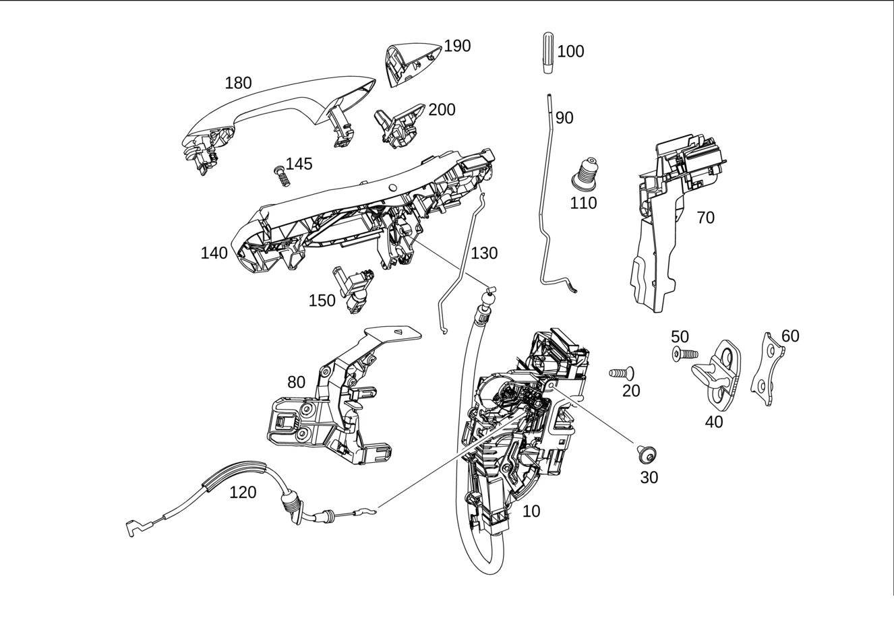

| № | Артикул | Название | Кол. | Примечание | Ограничение |
|---|---|---|---|---|---|
| 10 | A 099 720 63 01 | Замок двери (DOOR LOCK) | 1 | Слева Рулевое управление: Влево | |
| 10 | A 099 720 93 00 | Замок двери (DOOR LOCK) | 1 | Слева Рулевое управление: Влево | 700 |
| 10 | A 099 720 69 01 | Замок двери (DOOR LOCK) | 1 | Слева Рулевое управление: Влево | 700 |
| 10 | A 099 720 64 01 | Замок двери (DOOR LOCK) | 1 | Слева Рулевое управление: Вправо | |
| 10 | A 099 720 65 01 | Замок двери (DOOR LOCK) | 1 | Слева Рулевое управление: Вправо | 885 |
| 10 | A 099 720 66 01 | Замок двери (DOOR LOCK) | 1 | Справа Рулевое управление: Вправо | |
| 10 | A 099 720 67 01 | Замок двери (DOOR LOCK) | 1 | Справа Рулевое управление: Вправо | 885 |
| 10 | A 099 720 68 01 | Замок двери (DOOR LOCK) | 1 | Справа Рулевое управление: Влево | |
| 10 | A 099 720 96 00 | Замок двери (DOOR LOCK) | 1 | Справа Рулевое управление: Влево | 700 |
| 10 | A 099 720 73 01 | Замок двери (DOOR LOCK) | 1 | Справа Рулевое управление: Влево | 700 |
| 20 | A 001 990 10 02 | Винт Torx потайной (COUNTERSUNK SCREW) | 2 | Замок двери к двери слева; M6X14 | |
| 20 | A 001 990 10 02 | Винт Torx потайной (COUNTERSUNK SCREW) | 2 | Замок двери к двери справа; M6X14 | |
| 30 | A 010 990 22 04 | Винт с внутр. звездочкой (FLAT HEAD SCREW) | 1 | Замок двери к внутренней панели двери слева; M6X10 | |
| 30 | A 010 990 22 04 | Винт с внутр. звездочкой (FLAT HEAD SCREW) | 1 | Замок двери к внутренней панели двери справа; M6X10 | |
| 40 | A 099 723 05 00 | Скоба замка (LOCK STRIKER) | 1 | Слева | |
| 40 | A 099 723 22 00 | Скоба замка (LOCK STRIKER) | 1 | Слева | |
| 40 | A 099 723 05 00 | Скоба замка (LOCK STRIKER) | 1 | Справа | |
| 40 | A 099 723 22 00 | Скоба замка (LOCK STRIKER) | 1 | Справа | |
| 50 | A 001 990 11 02 | Винт Torx потайной (COUNTERSUNK SCREW) | 2 | Запорная проушина замка к средней стойке слева; M8X20 | |
| 50 | A 001 990 11 02 | Винт Torx потайной (COUNTERSUNK SCREW) | 2 | Запорная проушина замка к средней стойке слева; M8X20 | 830 |
| 50 | A 001 990 23 02 | Винт Torx потайной (COUNTERSUNK SCREW) | 2 | Запорная проушина замка к средней стойке слева; M8X25 | |
| 50 | A 001 990 11 02 | Винт Torx потайной (COUNTERSUNK SCREW) | 2 | Запорная проушина замка к средней стойке справа; M8X20 | |
| 50 | A 001 990 11 02 | Винт Torx потайной (COUNTERSUNK SCREW) | 2 | Запорная проушина замка к средней стойке справа; M8X20 | 830 |
| 50 | A 001 990 23 02 | Винт Torx потайной (COUNTERSUNK SCREW) | 2 | Запорная проушина замка к средней стойке справа; M8X25 | |
| 60 | A 204 723 01 11 | Пластина (PLATE) | 1 | Пластина с резьбой в средней стойке для крепления запорной проушины замка слева | |
| 60 | A 204 723 01 11 | Пластина (PLATE) | 1 | Пластина с резьбой в средней стойке для крепления запорной проушины замка справа | |
| 70 | A 253 723 01 14 | Держатель (HOLDER) | 1 | Опорная дуга, слева | |
| 70 | A 253 723 02 14 | Держатель (HOLDER) | 1 | Опорная дуга, справа | |
| 80 | A 253 723 03 14 | Держатель (HOLDER) | 1 | Замок двери слева | |
| 80 | A 253 723 04 14 | Держатель (HOLDER) | 1 | Замок двери справа | |
| 90 | A 253 723 01 39 | Блокирующая тяга (SECURING ROD) | 1 | Слева | |
| 90 | A 253 723 02 39 | Блокирующая тяга (SECURING ROD) | 1 | Справа | |
| 100 | A 099 766 05 00 | Кнопка блокировки двери (KNOB, DOOR LOCK) | 1 | Слева | |
| 100 | A 099 766 05 00 | Кнопка блокировки двери (KNOB, DOOR LOCK) | 1 | Справа | |
| 110 | A 166 723 00 94 | Гофрированный чехол (BELLOWS) | 1 | Слева | |
| 110 | A 166 723 00 94 | Гофрированный чехол (BELLOWS) | 1 | Справа | |
| 120 | A 253 760 01 00 | Трос (PULLEY) | 1 | Слева | |
| 120 | A 253 760 01 00 | Трос (PULLEY) | 1 | Справа | |
| 130 | A 253 722 01 70 | Соединительная тяга (LINK ROD) | 1 | Слева Рулевое управление: Влево | |
| 130 | A 253 722 02 70 | Соединительная тяга (LINK ROD) | 1 | Справа Рулевое управление: Вправо | |
| 140 | A 099 760 15 00 | Основание ручки двери (BEARING BRACKET) | 1 | Слева Рулевое управление: Влево | |
| 140 | A 099 760 19 00 | Основание ручки двери (BEARING BRACKET) | 1 | Слева Рулевое управление: Влево | 889/896/889+896 |
| 140 | A 099 760 17 00 | Основание ручки двери (BEARING BRACKET) | 1 | Слева Рулевое управление: Вправо | |
| 140 | A 099 760 21 00 | Основание ручки двери (BEARING BRACKET) | 1 | Слева Рулевое управление: Вправо | 889 |
| 140 | A 099 760 18 00 | Основание ручки двери (BEARING BRACKET) | 1 | Справа Рулевое управление: Влево | |
| 140 | A 099 760 22 00 | Основание ручки двери (BEARING BRACKET) | 1 | Справа Рулевое управление: Влево | 889 |
| 140 | A 099 760 16 00 | Основание ручки двери (BEARING BRACKET) | 1 | Справа Рулевое управление: Вправо | |
| 140 | A 099 760 20 00 | Основание ручки двери (BEARING BRACKET) | 1 | Справа Рулевое управление: Вправо | 889/896/889+896 |
| 140 | A 099 760 45 00 | Основание ручки двери (BEARING BRACKET) | 1 | Справа Рулевое управление: Вправо | 885 |
| 140 | A 099 760 46 00 | Основание ручки двери (BEARING BRACKET) | 1 | Справа Рулевое управление: Вправо | (889/896/889+896)+885 |
| 145 | A 000 990 80 25 | Винт Torx с полукр. гол. (PAN HEAD SCREW) | 2 | Опорная дуга, слева | |
| 145 | A 000 990 80 25 | Винт Torx с полукр. гол. (PAN HEAD SCREW) | 2 | Опорная дуга, справа | |
| 150 | A 099 820 01 83 | Световод (LIGHT-GUIDING ELEMENT) | 1 | Слева [402] БОЛЬШЕ НЕ ПОСТАВЛЯЕТСЯ | 889 |
| 150 | A 099 820 02 83 | Световод (LIGHT-GUIDING ELEMENT) | 1 | Справа [402] БОЛЬШЕ НЕ ПОСТАВЛЯЕТСЯ | 889 |
| 180 | A 099 760 13 59 | Ручка двери (DOOR HANDLE) | 1 | Слева Рулевое управление: Влево | |
| 180 | A 099 760 47 01 | Ручка двери (DOOR HANDLE) | 1 | Слева Рулевое управление: Влево | 889 |
| 180 | A 099 760 15 01 | Ручка двери (DOOR HANDLE) | 1 | Слева Рулевое управление: Влево | 896/889+896 |
| 180 | A 099 760 73 00 | Ручка двери (DOOR HANDLE) | 1 | Слева Рулевое управление: Влево | 889 |
| 180 | A 099 760 15 59 | Ручка двери (DOOR HANDLE) | 1 | Слева Рулевое управление: Вправо | |
| 180 | A 099 760 55 01 | Ручка двери (DOOR HANDLE) | 1 | Слева Рулевое управление: Вправо | 889 |
| 180 | A 099 760 19 01 | Ручка двери (DOOR HANDLE) | 1 | Слева Рулевое управление: Вправо | 889/889+896 |
| 180 | A 099 760 53 01 | Ручка двери (DOOR HANDLE) | 1 | Слева Рулевое управление: Вправо | 896 |
| 180 | A 099 760 16 59 | Ручка двери (DOOR HANDLE) | 1 | Справа Рулевое управление: Влево | |
| 180 | A 099 760 56 01 | Ручка двери (DOOR HANDLE) | 1 | Справа Рулевое управление: Влево | 889 |
| 180 | A 099 760 20 01 | Ручка двери (DOOR HANDLE) | 1 | Справа Рулевое управление: Влево | 889/889+896 |
| 180 | A 099 760 54 01 | Ручка двери (DOOR HANDLE) | 1 | Справа Рулевое управление: Влево | 896 |
| 180 | A 099 760 14 59 | Ручка двери (DOOR HANDLE) | 1 | Справа Рулевое управление: Вправо | |
| 180 | A 099 760 48 01 | Ручка двери (DOOR HANDLE) | 1 | Справа Рулевое управление: Вправо | 889 |
| 180 | A 099 760 16 01 | Ручка двери (DOOR HANDLE) | 1 | Справа Рулевое управление: Вправо | 896/889+896 |
| 180 | A 099 760 74 00 | Ручка двери (DOOR HANDLE) | 1 | Справа Рулевое управление: Вправо | 889 |
| 190 | A 099 766 19 00 | Декоративная розетка (TRIM RING) | 1 | Слева Рулевое управление: Влево | |
| 190 | A 099 766 17 00 | Декоративная розетка | 1 | Слева Рулевое управление: Влево | 889 |
| 190 | A 099 766 20 00 | Декоративная розетка | 1 | Справа Рулевое управление: Вправо | |
| 190 | A 099 766 18 00 | Декоративная розетка | 1 | Справа Рулевое управление: Вправо | 889 |
| 200 | A 099 760 25 00 | Накладка ручки двери (COVER, DOOR HANDLE) | 1 | Слева Рулевое управление: Вправо | |
| 200 | A 099 760 27 00 | Накладка ручки двери (COVER, DOOR HANDLE) | 1 | Слева Рулевое управление: Вправо | 889 |
| 200 | A 099 760 26 00 | Накладка ручки двери (COVER, DOOR HANDLE) | 1 | Справа Рулевое управление: Влево | |
| 200 | A 099 760 28 00 | Накладка ручки двери (COVER, DOOR HANDLE) | 1 | Справа Рулевое управление: Влево | 889 |
| 400 | A 222 905 41 00 | Ключ (KEY) | 2 | Электронный, незапрограммированный ES2: 9999 [429] ДЕТАЛЬ, СВЯЗАННАЯ С ПРОТИВОУГОННОЙ БЕЗОПАСНОСТЬЮ [-] При заказе обязательно полностью заполнить и архивировать формуляр. "Заказ заменяющего ключа / деталей системы замков": в случае возможного уголовного расследования должна быть возможность в любой момент предоставить подтверждение. [-] На автомобиле с FBS4 для программирования дополнительного или запасного ключа FBS4 используйте XENTRY Diagnostics, выбрав «Запрограммировать и инициализировать дополнительный ключ» или «Запрограммировать и инициализировать запасной ключ» | 890 |
| 400 | A 222 905 44 00 | Ключ (KEY) | 2 | Электронный, незапрограммированный ES2: 9999 [429] ДЕТАЛЬ, СВЯЗАННАЯ С ПРОТИВОУГОННОЙ БЕЗОПАСНОСТЬЮ [-] При заказе обязательно полностью заполнить и архивировать формуляр. "Заказ заменяющего ключа / деталей системы замков": в случае возможного уголовного расследования должна быть возможность в любой момент предоставить подтверждение. [-] На автомобиле с FBS4 для программирования дополнительного или запасного ключа FBS4 используйте XENTRY Diagnostics, выбрав «Запрограммировать и инициализировать дополнительный ключ» или «Запрограммировать и инициализировать запасной ключ» | 890+(460+551/494/763) |
| 400 | A 222 905 47 00 | Ключ (KEY) | 2 | Электронный, незапрограммированный ES2: 9999 [429] ДЕТАЛЬ, СВЯЗАННАЯ С ПРОТИВОУГОННОЙ БЕЗОПАСНОСТЬЮ [-] При заказе обязательно полностью заполнить и архивировать формуляр. "Заказ заменяющего ключа / деталей системы замков": в случае возможного уголовного расследования должна быть возможность в любой момент предоставить подтверждение. [-] На автомобиле с FBS4 для программирования дополнительного или запасного ключа FBS4 используйте XENTRY Diagnostics, выбрав «Запрограммировать и инициализировать дополнительный ключ» или «Запрограммировать и инициализировать запасной ключ» | 890+(460/762) |
| 400 | A 205 905 06 00 | Ключ (KEY) | 2 | Электронный, незапрограммированный ES2: 9999 [429] ДЕТАЛЬ, СВЯЗАННАЯ С ПРОТИВОУГОННОЙ БЕЗОПАСНОСТЬЮ [-] При заказе обязательно полностью заполнить и архивировать формуляр. "Заказ заменяющего ключа / деталей системы замков": в случае возможного уголовного расследования должна быть возможность в любой момент предоставить подтверждение. [-] На автомобиле с FBS4 для программирования дополнительного или запасного ключа FBS4 используйте XENTRY Diagnostics, выбрав «Запрограммировать и инициализировать дополнительный ключ» или «Запрограммировать и инициализировать запасной ключ» | |
| 400 | A 205 905 07 00 | Ключ (KEY) | 2 | Электронный, незапрограммированный ES2: 9999 [429] ДЕТАЛЬ, СВЯЗАННАЯ С ПРОТИВОУГОННОЙ БЕЗОПАСНОСТЬЮ [-] При заказе обязательно полностью заполнить и архивировать формуляр. "Заказ заменяющего ключа / деталей системы замков": в случае возможного уголовного расследования должна быть возможность в любой момент предоставить подтверждение. [-] На автомобиле с FBS4 для программирования дополнительного или запасного ключа FBS4 используйте XENTRY Diagnostics, выбрав «Запрограммировать и инициализировать дополнительный ключ» или «Запрограммировать и инициализировать запасной ключ» | 460+551/494/763 |
| 400 | A 205 905 08 00 | Ключ (KEY) | 2 | Электронный, незапрограммированный ES2: 9999 [429] ДЕТАЛЬ, СВЯЗАННАЯ С ПРОТИВОУГОННОЙ БЕЗОПАСНОСТЬЮ [-] При заказе обязательно полностью заполнить и архивировать формуляр. "Заказ заменяющего ключа / деталей системы замков": в случае возможного уголовного расследования должна быть возможность в любой момент предоставить подтверждение. [-] На автомобиле с FBS4 для программирования дополнительного или запасного ключа FBS4 используйте XENTRY Diagnostics, выбрав «Запрограммировать и инициализировать дополнительный ключ» или «Запрограммировать и инициализировать запасной ключ» | 460/762 |
| 400 | A 222 905 50 08 | Ключ (KEY) | 2 | Электронный, незапрограммированный ES2: 9999 [429] ДЕТАЛЬ, СВЯЗАННАЯ С ПРОТИВОУГОННОЙ БЕЗОПАСНОСТЬЮ [-] При заказе обязательно полностью заполнить и архивировать формуляр. "Заказ заменяющего ключа / деталей системы замков": в случае возможного уголовного расследования должна быть возможность в любой момент предоставить подтверждение. [-] На автомобиле с FBS4 для программирования дополнительного или запасного ключа FBS4 используйте XENTRY Diagnostics, выбрав «Запрограммировать и инициализировать дополнительный ключ» или «Запрограммировать и инициализировать запасной ключ» | 893+890 |
| 400 | A 222 905 51 08 | Ключ (KEY) | 2 | Электронный, незапрограммированный ES2: 9999 [429] ДЕТАЛЬ, СВЯЗАННАЯ С ПРОТИВОУГОННОЙ БЕЗОПАСНОСТЬЮ [-] При заказе обязательно полностью заполнить и архивировать формуляр. "Заказ заменяющего ключа / деталей системы замков": в случае возможного уголовного расследования должна быть возможность в любой момент предоставить подтверждение. [-] На автомобиле с FBS4 для программирования дополнительного или запасного ключа FBS4 используйте XENTRY Diagnostics, выбрав «Запрограммировать и инициализировать дополнительный ключ» или «Запрограммировать и инициализировать запасной ключ» | 893+890+(460+551/494/763) |
| 400 | A 222 905 52 08 | Ключ (KEY) | 2 | Электронный, незапрограммированный ES2: 9999 [429] ДЕТАЛЬ, СВЯЗАННАЯ С ПРОТИВОУГОННОЙ БЕЗОПАСНОСТЬЮ [-] При заказе обязательно полностью заполнить и архивировать формуляр. "Заказ заменяющего ключа / деталей системы замков": в случае возможного уголовного расследования должна быть возможность в любой момент предоставить подтверждение. [-] На автомобиле с FBS4 для программирования дополнительного или запасного ключа FBS4 используйте XENTRY Diagnostics, выбрав «Запрограммировать и инициализировать дополнительный ключ» или «Запрограммировать и инициализировать запасной ключ» | 893+890+(460/762) |
| 400 | A 205 905 14 11 | Ключ (KEY) | 2 | Электронный, незапрограммированный ES2: 9999 [429] ДЕТАЛЬ, СВЯЗАННАЯ С ПРОТИВОУГОННОЙ БЕЗОПАСНОСТЬЮ [-] При заказе обязательно полностью заполнить и архивировать формуляр. "Заказ заменяющего ключа / деталей системы замков": в случае возможного уголовного расследования должна быть возможность в любой момент предоставить подтверждение. [-] На автомобиле с FBS4 для программирования дополнительного или запасного ключа FBS4 используйте XENTRY Diagnostics, выбрав «Запрограммировать и инициализировать дополнительный ключ» или «Запрограммировать и инициализировать запасной ключ» | 893 |
| 400 | A 205 905 15 11 | Ключ (KEY) | 2 | Электронный, незапрограммированный ES2: 9999 [429] ДЕТАЛЬ, СВЯЗАННАЯ С ПРОТИВОУГОННОЙ БЕЗОПАСНОСТЬЮ [-] При заказе обязательно полностью заполнить и архивировать формуляр. "Заказ заменяющего ключа / деталей системы замков": в случае возможного уголовного расследования должна быть возможность в любой момент предоставить подтверждение. [-] На автомобиле с FBS4 для программирования дополнительного или запасного ключа FBS4 используйте XENTRY Diagnostics, выбрав «Запрограммировать и инициализировать дополнительный ключ» или «Запрограммировать и инициализировать запасной ключ» | 893+(460+551/494/763) |
| 400 | A 205 905 16 11 | Ключ (KEY) | 2 | Электронный, незапрограммированный ES2: 9999 [429] ДЕТАЛЬ, СВЯЗАННАЯ С ПРОТИВОУГОННОЙ БЕЗОПАСНОСТЬЮ [-] При заказе обязательно полностью заполнить и архивировать формуляр. "Заказ заменяющего ключа / деталей системы замков": в случае возможного уголовного расследования должна быть возможность в любой момент предоставить подтверждение. [-] На автомобиле с FBS4 для программирования дополнительного или запасного ключа FBS4 используйте XENTRY Diagnostics, выбрав «Запрограммировать и инициализировать дополнительный ключ» или «Запрограммировать и инициализировать запасной ключ» | 893+(460/762) |
| 400 | A 222 905 41 00 | Ключ (KEY) | 2 | Электронный, запрограммированный [429] ДЕТАЛЬ, СВЯЗАННАЯ С ПРОТИВОУГОННОЙ БЕЗОПАСНОСТЬЮ [-] При заказе обязательно полностью заполнить и архивировать формуляр. "Заказ заменяющего ключа / деталей системы замков": в случае возможного уголовного расследования должна быть возможность в любой момент предоставить подтверждение. [-] На автомобиле с FBS4 перед заказом обязательно с помощью XENTRY Diagnostics выполните следующую команду: «Зарегистрировать автомобиль для заказа запрограммированного ключа» [-] Внимание ! При заказе замещающего ключа необходимо указать ES-2. Считать данные из автомобиля | 890 |
| 400 | A 222 905 44 00 | Ключ (KEY) | 2 | Электронный, запрограммированный [429] ДЕТАЛЬ, СВЯЗАННАЯ С ПРОТИВОУГОННОЙ БЕЗОПАСНОСТЬЮ [-] При заказе обязательно полностью заполнить и архивировать формуляр. "Заказ заменяющего ключа / деталей системы замков": в случае возможного уголовного расследования должна быть возможность в любой момент предоставить подтверждение. [-] На автомобиле с FBS4 перед заказом обязательно с помощью XENTRY Diagnostics выполните следующую команду: «Зарегистрировать автомобиль для заказа запрограммированного ключа» [-] Внимание ! При заказе замещающего ключа необходимо указать ES-2. Считать данные из автомобиля | 890+(460+551/494/763) |
| 400 | A 222 905 47 00 | Ключ (KEY) | 2 | Электронный, запрограммированный [429] ДЕТАЛЬ, СВЯЗАННАЯ С ПРОТИВОУГОННОЙ БЕЗОПАСНОСТЬЮ [-] При заказе обязательно полностью заполнить и архивировать формуляр. "Заказ заменяющего ключа / деталей системы замков": в случае возможного уголовного расследования должна быть возможность в любой момент предоставить подтверждение. [-] На автомобиле с FBS4 перед заказом обязательно с помощью XENTRY Diagnostics выполните следующую команду: «Зарегистрировать автомобиль для заказа запрограммированного ключа» [-] Внимание ! При заказе замещающего ключа необходимо указать ES-2. Считать данные из автомобиля | 890+(460/762) |
| 400 | A 205 905 06 00 | Ключ (KEY) | 2 | Электронный, запрограммированный [429] ДЕТАЛЬ, СВЯЗАННАЯ С ПРОТИВОУГОННОЙ БЕЗОПАСНОСТЬЮ [-] При заказе обязательно полностью заполнить и архивировать формуляр. "Заказ заменяющего ключа / деталей системы замков": в случае возможного уголовного расследования должна быть возможность в любой момент предоставить подтверждение. [-] На автомобиле с FBS4 перед заказом обязательно с помощью XENTRY Diagnostics выполните следующую команду: «Зарегистрировать автомобиль для заказа запрограммированного ключа» [-] Внимание ! При заказе замещающего ключа необходимо указать ES-2. Считать данные из автомобиля | |
| 400 | A 205 905 07 00 | Ключ (KEY) | 2 | Электронный, запрограммированный [429] ДЕТАЛЬ, СВЯЗАННАЯ С ПРОТИВОУГОННОЙ БЕЗОПАСНОСТЬЮ [-] При заказе обязательно полностью заполнить и архивировать формуляр. "Заказ заменяющего ключа / деталей системы замков": в случае возможного уголовного расследования должна быть возможность в любой момент предоставить подтверждение. [-] На автомобиле с FBS4 перед заказом обязательно с помощью XENTRY Diagnostics выполните следующую команду: «Зарегистрировать автомобиль для заказа запрограммированного ключа» [-] Внимание ! При заказе замещающего ключа необходимо указать ES-2. Считать данные из автомобиля | 460+551/494/763 |
| 400 | A 205 905 08 00 | Ключ (KEY) | 2 | Электронный, запрограммированный [429] ДЕТАЛЬ, СВЯЗАННАЯ С ПРОТИВОУГОННОЙ БЕЗОПАСНОСТЬЮ [-] При заказе обязательно полностью заполнить и архивировать формуляр. "Заказ заменяющего ключа / деталей системы замков": в случае возможного уголовного расследования должна быть возможность в любой момент предоставить подтверждение. [-] На автомобиле с FBS4 перед заказом обязательно с помощью XENTRY Diagnostics выполните следующую команду: «Зарегистрировать автомобиль для заказа запрограммированного ключа» [-] Внимание ! При заказе замещающего ключа необходимо указать ES-2. Считать данные из автомобиля | 460/762 |
| 400 | A 222 905 50 08 | Ключ (KEY) | 2 | Электронный, запрограммированный [429] ДЕТАЛЬ, СВЯЗАННАЯ С ПРОТИВОУГОННОЙ БЕЗОПАСНОСТЬЮ [-] При заказе обязательно полностью заполнить и архивировать формуляр. "Заказ заменяющего ключа / деталей системы замков": в случае возможного уголовного расследования должна быть возможность в любой момент предоставить подтверждение. [-] На автомобиле с FBS4 перед заказом обязательно с помощью XENTRY Diagnostics выполните следующую команду: «Зарегистрировать автомобиль для заказа запрограммированного ключа» [-] Внимание ! При заказе замещающего ключа необходимо указать ES-2. Считать данные из автомобиля | 893+890 |
| 400 | A 222 905 51 08 | Ключ (KEY) | 2 | Электронный, запрограммированный [429] ДЕТАЛЬ, СВЯЗАННАЯ С ПРОТИВОУГОННОЙ БЕЗОПАСНОСТЬЮ [-] При заказе обязательно полностью заполнить и архивировать формуляр. "Заказ заменяющего ключа / деталей системы замков": в случае возможного уголовного расследования должна быть возможность в любой момент предоставить подтверждение. [-] На автомобиле с FBS4 перед заказом обязательно с помощью XENTRY Diagnostics выполните следующую команду: «Зарегистрировать автомобиль для заказа запрограммированного ключа» [-] Внимание ! При заказе замещающего ключа необходимо указать ES-2. Считать данные из автомобиля | 893+890+(460+551/494/763) |
| 400 | A 222 905 52 08 | Ключ (KEY) | 2 | Электронный, запрограммированный [429] ДЕТАЛЬ, СВЯЗАННАЯ С ПРОТИВОУГОННОЙ БЕЗОПАСНОСТЬЮ [-] При заказе обязательно полностью заполнить и архивировать формуляр. "Заказ заменяющего ключа / деталей системы замков": в случае возможного уголовного расследования должна быть возможность в любой момент предоставить подтверждение. [-] На автомобиле с FBS4 перед заказом обязательно с помощью XENTRY Diagnostics выполните следующую команду: «Зарегистрировать автомобиль для заказа запрограммированного ключа» [-] Внимание ! При заказе замещающего ключа необходимо указать ES-2. Считать данные из автомобиля | 893+890+(460/762) |
| 400 | A 205 905 14 11 | Ключ (KEY) | 2 | Электронный, запрограммированный [429] ДЕТАЛЬ, СВЯЗАННАЯ С ПРОТИВОУГОННОЙ БЕЗОПАСНОСТЬЮ [-] При заказе обязательно полностью заполнить и архивировать формуляр. "Заказ заменяющего ключа / деталей системы замков": в случае возможного уголовного расследования должна быть возможность в любой момент предоставить подтверждение. [-] На автомобиле с FBS4 перед заказом обязательно с помощью XENTRY Diagnostics выполните следующую команду: «Зарегистрировать автомобиль для заказа запрограммированного ключа» [-] Внимание ! При заказе замещающего ключа необходимо указать ES-2. Считать данные из автомобиля | 893 |
| 400 | A 205 905 15 11 | Ключ (KEY) | 2 | Электронный, запрограммированный [429] ДЕТАЛЬ, СВЯЗАННАЯ С ПРОТИВОУГОННОЙ БЕЗОПАСНОСТЬЮ [-] При заказе обязательно полностью заполнить и архивировать формуляр. "Заказ заменяющего ключа / деталей системы замков": в случае возможного уголовного расследования должна быть возможность в любой момент предоставить подтверждение. [-] На автомобиле с FBS4 перед заказом обязательно с помощью XENTRY Diagnostics выполните следующую команду: «Зарегистрировать автомобиль для заказа запрограммированного ключа» [-] Внимание ! При заказе замещающего ключа необходимо указать ES-2. Считать данные из автомобиля | 893+(460+551/494/763) |
| 400 | A 205 905 16 11 | Ключ (KEY) | 2 | Электронный, запрограммированный [429] ДЕТАЛЬ, СВЯЗАННАЯ С ПРОТИВОУГОННОЙ БЕЗОПАСНОСТЬЮ [-] При заказе обязательно полностью заполнить и архивировать формуляр. "Заказ заменяющего ключа / деталей системы замков": в случае возможного уголовного расследования должна быть возможность в любой момент предоставить подтверждение. [-] На автомобиле с FBS4 перед заказом обязательно с помощью XENTRY Diagnostics выполните следующую команду: «Зарегистрировать автомобиль для заказа запрограммированного ключа» [-] Внимание ! При заказе замещающего ключа необходимо указать ES-2. Считать данные из автомобиля | 893+(460/762) |
| 400 | A 222 905 19 10 | Ключ (KEY) | 2 | Электронный, незапрограммированный ES2: 9999 [429] ДЕТАЛЬ, СВЯЗАННАЯ С ПРОТИВОУГОННОЙ БЕЗОПАСНОСТЬЮ [-] При заказе обязательно полностью заполнить и архивировать формуляр. "Заказ заменяющего ключа / деталей системы замков": в случае возможного уголовного расследования должна быть возможность в любой момент предоставить подтверждение. [-] На автомобиле с FBS4 для программирования дополнительного или запасного ключа FBS4 используйте XENTRY Diagnostics, выбрав «Запрограммировать и инициализировать дополнительный ключ» или «Запрограммировать и инициализировать запасной ключ» | 889+890 |
| 400 | A 222 905 22 10 | Ключ (KEY) | 2 | Электронный, незапрограммированный ES2: 9999 [429] ДЕТАЛЬ, СВЯЗАННАЯ С ПРОТИВОУГОННОЙ БЕЗОПАСНОСТЬЮ [-] При заказе обязательно полностью заполнить и архивировать формуляр. "Заказ заменяющего ключа / деталей системы замков": в случае возможного уголовного расследования должна быть возможность в любой момент предоставить подтверждение. [-] На автомобиле с FBS4 для программирования дополнительного или запасного ключа FBS4 используйте XENTRY Diagnostics, выбрав «Запрограммировать и инициализировать дополнительный ключ» или «Запрограммировать и инициализировать запасной ключ» | 889+890+(460+551/494/763) |
| 400 | A 222 905 25 10 | Ключ (KEY) | 2 | Электронный, незапрограммированный ES2: 9999 [429] ДЕТАЛЬ, СВЯЗАННАЯ С ПРОТИВОУГОННОЙ БЕЗОПАСНОСТЬЮ [-] При заказе обязательно полностью заполнить и архивировать формуляр. "Заказ заменяющего ключа / деталей системы замков": в случае возможного уголовного расследования должна быть возможность в любой момент предоставить подтверждение. [-] На автомобиле с FBS4 для программирования дополнительного или запасного ключа FBS4 используйте XENTRY Diagnostics, выбрав «Запрограммировать и инициализировать дополнительный ключ» или «Запрограммировать и инициализировать запасной ключ» | 889+890+(460/762) |
| 400 | A 205 905 88 14 | Ключ (KEY) | 2 | Электронный, незапрограммированный ES2: 9999 [429] ДЕТАЛЬ, СВЯЗАННАЯ С ПРОТИВОУГОННОЙ БЕЗОПАСНОСТЬЮ [-] При заказе обязательно полностью заполнить и архивировать формуляр. "Заказ заменяющего ключа / деталей системы замков": в случае возможного уголовного расследования должна быть возможность в любой момент предоставить подтверждение. [-] На автомобиле с FBS4 для программирования дополнительного или запасного ключа FBS4 используйте XENTRY Diagnostics, выбрав «Запрограммировать и инициализировать дополнительный ключ» или «Запрограммировать и инициализировать запасной ключ» | 889 |
| 400 | A 205 905 91 14 | Ключ (KEY) | 2 | Электронный, незапрограммированный ES2: 9999 [429] ДЕТАЛЬ, СВЯЗАННАЯ С ПРОТИВОУГОННОЙ БЕЗОПАСНОСТЬЮ [-] При заказе обязательно полностью заполнить и архивировать формуляр. "Заказ заменяющего ключа / деталей системы замков": в случае возможного уголовного расследования должна быть возможность в любой момент предоставить подтверждение. [-] На автомобиле с FBS4 для программирования дополнительного или запасного ключа FBS4 используйте XENTRY Diagnostics, выбрав «Запрограммировать и инициализировать дополнительный ключ» или «Запрограммировать и инициализировать запасной ключ» | 889+(460+551/494/763) |
| 400 | A 222 905 19 10 | Ключ (KEY) | 2 | Электронный, запрограммированный [429] ДЕТАЛЬ, СВЯЗАННАЯ С ПРОТИВОУГОННОЙ БЕЗОПАСНОСТЬЮ [-] При заказе обязательно полностью заполнить и архивировать формуляр. "Заказ заменяющего ключа / деталей системы замков": в случае возможного уголовного расследования должна быть возможность в любой момент предоставить подтверждение. [-] На автомобиле с FBS4 перед заказом обязательно с помощью XENTRY Diagnostics выполните следующую команду: «Зарегистрировать автомобиль для заказа запрограммированного ключа» [-] Внимание ! При заказе замещающего ключа необходимо указать ES-2. Считать данные из автомобиля | 889+890 |
| 400 | A 222 905 22 10 | Ключ (KEY) | 2 | Электронный, запрограммированный [429] ДЕТАЛЬ, СВЯЗАННАЯ С ПРОТИВОУГОННОЙ БЕЗОПАСНОСТЬЮ [-] При заказе обязательно полностью заполнить и архивировать формуляр. "Заказ заменяющего ключа / деталей системы замков": в случае возможного уголовного расследования должна быть возможность в любой момент предоставить подтверждение. [-] На автомобиле с FBS4 перед заказом обязательно с помощью XENTRY Diagnostics выполните следующую команду: «Зарегистрировать автомобиль для заказа запрограммированного ключа» [-] Внимание ! При заказе замещающего ключа необходимо указать ES-2. Считать данные из автомобиля | 889+890+(460+551/494/763) |
| 400 | A 222 905 25 10 | Ключ (KEY) | 2 | Электронный, запрограммированный [429] ДЕТАЛЬ, СВЯЗАННАЯ С ПРОТИВОУГОННОЙ БЕЗОПАСНОСТЬЮ [-] При заказе обязательно полностью заполнить и архивировать формуляр. "Заказ заменяющего ключа / деталей системы замков": в случае возможного уголовного расследования должна быть возможность в любой момент предоставить подтверждение. [-] На автомобиле с FBS4 перед заказом обязательно с помощью XENTRY Diagnostics выполните следующую команду: «Зарегистрировать автомобиль для заказа запрограммированного ключа» [-] Внимание ! При заказе замещающего ключа необходимо указать ES-2. Считать данные из автомобиля | 889+890+(460/762) |
| 400 | A 205 905 88 14 | Ключ (KEY) | 2 | Электронный, запрограммированный [429] ДЕТАЛЬ, СВЯЗАННАЯ С ПРОТИВОУГОННОЙ БЕЗОПАСНОСТЬЮ [-] При заказе обязательно полностью заполнить и архивировать формуляр. "Заказ заменяющего ключа / деталей системы замков": в случае возможного уголовного расследования должна быть возможность в любой момент предоставить подтверждение. [-] На автомобиле с FBS4 перед заказом обязательно с помощью XENTRY Diagnostics выполните следующую команду: «Зарегистрировать автомобиль для заказа запрограммированного ключа» [-] Внимание ! При заказе замещающего ключа необходимо указать ES-2. Считать данные из автомобиля | 889 |
| 400 | A 205 905 91 14 | Ключ (KEY) | 2 | Электронный, запрограммированный [429] ДЕТАЛЬ, СВЯЗАННАЯ С ПРОТИВОУГОННОЙ БЕЗОПАСНОСТЬЮ [-] При заказе обязательно полностью заполнить и архивировать формуляр. "Заказ заменяющего ключа / деталей системы замков": в случае возможного уголовного расследования должна быть возможность в любой момент предоставить подтверждение. [-] На автомобиле с FBS4 перед заказом обязательно с помощью XENTRY Diagnostics выполните следующую команду: «Зарегистрировать автомобиль для заказа запрограммированного ключа» [-] Внимание ! При заказе замещающего ключа необходимо указать ES-2. Считать данные из автомобиля | 889+(460+551/494/763) |
| 410 | A 000 905 00 39 | Сервисный ключ (KEY) | 1 | Сервисный ключ; не программированный ES2: 9999 [429] ДЕТАЛЬ, СВЯЗАННАЯ С ПРОТИВОУГОННОЙ БЕЗОПАСНОСТЬЮ [697] ДЕТАЛЬ ПОСТАВЛЯЕТСЯ ТОЛЬКО/ИЛИ ТАКЖЕ КАК ЗАП.ЧАСТЬ | |
| 410 | A 000 905 00 39 | Сервисный ключ (KEY) | 1 | Сервисный ключ; программированный [429] ДЕТАЛЬ, СВЯЗАННАЯ С ПРОТИВОУГОННОЙ БЕЗОПАСНОСТЬЮ [697] ДЕТАЛЬ ПОСТАВЛЯЕТСЯ ТОЛЬКО/ИЛИ ТАКЖЕ КАК ЗАП.ЧАСТЬ [T981] ====================================================================================I | |
| 420 | A 000 828 03 88 | Аккумуляторный блок (BATTERY PACK) | 1 | Запасной элемент питания, ключ; 3V, CR2025 | |
| 450 | A 099 760 01 01 | Комплект гарнитура замка (PARTS KIT, LOCKING SET) | 1 | Рулевое управление: Влево [429] ДЕТАЛЬ, СВЯЗАННАЯ С ПРОТИВОУГОННОЙ БЕЗОПАСНОСТЬЮ | |
| 450 | A 099 760 12 00 | Комплект гарнитура замка (PARTS KIT, LOCKING SET) | 1 | Рулевое управление: Влево [429] ДЕТАЛЬ, СВЯЗАННАЯ С ПРОТИВОУГОННОЙ БЕЗОПАСНОСТЬЮ | |
| 450 | A 099 760 43 01 | Комплект гарнитура замка (PARTS KIT, LOCKING SET) | 1 | Рулевое управление: Влево [429] ДЕТАЛЬ, СВЯЗАННАЯ С ПРОТИВОУГОННОЙ БЕЗОПАСНОСТЬЮ | 888 |
| 450 | A 099 760 87 01 | Комплект гарнитура замка (PARTS KIT, LOCKING SET) | 1 | Рулевое управление: Влево [429] ДЕТАЛЬ, СВЯЗАННАЯ С ПРОТИВОУГОННОЙ БЕЗОПАСНОСТЬЮ | 800+888 |
| 450 | A 099 760 87 01 | Комплект гарнитура замка (PARTS KIT, LOCKING SET) | 1 | Рулевое управление: Влево [429] ДЕТАЛЬ, СВЯЗАННАЯ С ПРОТИВОУГОННОЙ БЕЗОПАСНОСТЬЮ | 888 |
| 450 | A 099 760 02 01 | Комплект гарнитура замка (PARTS KIT, LOCKING SET) | 1 | Рулевое управление: Вправо [429] ДЕТАЛЬ, СВЯЗАННАЯ С ПРОТИВОУГОННОЙ БЕЗОПАСНОСТЬЮ | |
| 450 | A 099 760 13 00 | Комплект гарнитура замка (PARTS KIT, LOCKING SET) | 1 | Рулевое управление: Вправо [429] ДЕТАЛЬ, СВЯЗАННАЯ С ПРОТИВОУГОННОЙ БЕЗОПАСНОСТЬЮ | |
| 450 | A 099 760 44 01 | Комплект гарнитура замка (PARTS KIT, LOCKING SET) | 1 | Рулевое управление: Вправо [429] ДЕТАЛЬ, СВЯЗАННАЯ С ПРОТИВОУГОННОЙ БЕЗОПАСНОСТЬЮ | 888 |
| 450 | A 099 760 88 01 | Комплект гарнитура замка (PARTS KIT, LOCKING SET) | 1 | Рулевое управление: Вправо [429] ДЕТАЛЬ, СВЯЗАННАЯ С ПРОТИВОУГОННОЙ БЕЗОПАСНОСТЬЮ | 800+888 |
| 450 | A 099 760 88 01 | Комплект гарнитура замка (PARTS KIT, LOCKING SET) | 1 | Рулевое управление: Вправо [429] ДЕТАЛЬ, СВЯЗАННАЯ С ПРОТИВОУГОННОЙ БЕЗОПАСНОСТЬЮ | 888 |
| 460 | A 212 760 19 06 | - Главный ключ (KEY) | 2 | Механический привод для аварийного случая [429] ДЕТАЛЬ, СВЯЗАННАЯ С ПРОТИВОУГОННОЙ БЕЗОПАСНОСТЬЮ | |
| 460 | A 099 766 06 00 | - Механический ключ (KEY, MECHANICAL) | 2 | Механический привод для аварийного случая [429] ДЕТАЛЬ, СВЯЗАННАЯ С ПРОТИВОУГОННОЙ БЕЗОПАСНОСТЬЮ | 800 |
| 460 | A 099 766 06 00 | - Механический ключ (KEY, MECHANICAL) | 2 | Механический привод для аварийного случая [429] ДЕТАЛЬ, СВЯЗАННАЯ С ПРОТИВОУГОННОЙ БЕЗОПАСНОСТЬЮ | |
| 470 | A 099 760 95 00 | - Направляющая замк. цил. (LOCK CYLINDER GUIDE) | 1 | Замковый цилиндр, дверь водителя Рулевое управление: Влево [429] ДЕТАЛЬ, СВЯЗАННАЯ С ПРОТИВОУГОННОЙ БЕЗОПАСНОСТЬЮ | |
| 470 | A 099 760 96 00 | - Направляющая замк. цил. (LOCK CYLINDER GUIDE) | 1 | Замковый цилиндр, дверь водителя Рулевое управление: Вправо [429] ДЕТАЛЬ, СВЯЗАННАЯ С ПРОТИВОУГОННОЙ БЕЗОПАСНОСТЬЮ | |
| 600 | A 205 905 36 16 | Ключ (KEY) | 2 | Электронный, незапрограммированный ES2: 9999 [429] ДЕТАЛЬ, СВЯЗАННАЯ С ПРОТИВОУГОННОЙ БЕЗОПАСНОСТЬЮ [-] При заказе обязательно полностью заполнить и архивировать формуляр. "Заказ заменяющего ключа / деталей системы замков": в случае возможного уголовного расследования должна быть возможность в любой момент предоставить подтверждение. [-] На автомобиле с FBS4 для программирования дополнительного или запасного ключа FBS4 используйте XENTRY Diagnostics, выбрав «Запрограммировать и инициализировать дополнительный ключ» или «Запрограммировать и инициализировать запасной ключ» | 890+889+800 |
| 600 | A 205 905 36 16 | Ключ (KEY) | 2 | Электронный, незапрограммированный ES2: 9999 [429] ДЕТАЛЬ, СВЯЗАННАЯ С ПРОТИВОУГОННОЙ БЕЗОПАСНОСТЬЮ [-] При заказе обязательно полностью заполнить и архивировать формуляр. "Заказ заменяющего ключа / деталей системы замков": в случае возможного уголовного расследования должна быть возможность в любой момент предоставить подтверждение. [-] На автомобиле с FBS4 для программирования дополнительного или запасного ключа FBS4 используйте XENTRY Diagnostics, выбрав «Запрограммировать и инициализировать дополнительный ключ» или «Запрограммировать и инициализировать запасной ключ» | 890+889 |
| 600 | A 205 905 36 16 | Ключ (KEY) | 2 | Электронный, незапрограммированный ES2: 9999 [429] ДЕТАЛЬ, СВЯЗАННАЯ С ПРОТИВОУГОННОЙ БЕЗОПАСНОСТЬЮ [-] При заказе обязательно полностью заполнить и архивировать формуляр. "Заказ заменяющего ключа / деталей системы замков": в случае возможного уголовного расследования должна быть возможность в любой момент предоставить подтверждение. [-] На автомобиле с FBS4 для программирования дополнительного или запасного ключа FBS4 используйте XENTRY Diagnostics, выбрав «Запрограммировать и инициализировать дополнительный ключ» или «Запрограммировать и инициализировать запасной ключ» | 890+889 |
| 600 | A 205 905 39 16 | Ключ (KEY) | 2 | Электронный, незапрограммированный ES2: 9999 [429] ДЕТАЛЬ, СВЯЗАННАЯ С ПРОТИВОУГОННОЙ БЕЗОПАСНОСТЬЮ [-] При заказе обязательно полностью заполнить и архивировать формуляр. "Заказ заменяющего ключа / деталей системы замков": в случае возможного уголовного расследования должна быть возможность в любой момент предоставить подтверждение. [-] На автомобиле с FBS4 для программирования дополнительного или запасного ключа FBS4 используйте XENTRY Diagnostics, выбрав «Запрограммировать и инициализировать дополнительный ключ» или «Запрограммировать и инициализировать запасной ключ» | 890+889+(460+551/494/763)+800 |
| 600 | A 205 905 39 16 | Ключ (KEY) | 2 | Электронный, незапрограммированный ES2: 9999 [429] ДЕТАЛЬ, СВЯЗАННАЯ С ПРОТИВОУГОННОЙ БЕЗОПАСНОСТЬЮ [-] При заказе обязательно полностью заполнить и архивировать формуляр. "Заказ заменяющего ключа / деталей системы замков": в случае возможного уголовного расследования должна быть возможность в любой момент предоставить подтверждение. [-] На автомобиле с FBS4 для программирования дополнительного или запасного ключа FBS4 используйте XENTRY Diagnostics, выбрав «Запрограммировать и инициализировать дополнительный ключ» или «Запрограммировать и инициализировать запасной ключ» | 890+889+(460+551/494/763) |
| 600 | A 205 905 42 16 | Ключ (KEY) | 2 | Электронный, незапрограммированный ES2: 9999 [429] ДЕТАЛЬ, СВЯЗАННАЯ С ПРОТИВОУГОННОЙ БЕЗОПАСНОСТЬЮ [-] При заказе обязательно полностью заполнить и архивировать формуляр. "Заказ заменяющего ключа / деталей системы замков": в случае возможного уголовного расследования должна быть возможность в любой момент предоставить подтверждение. [-] На автомобиле с FBS4 для программирования дополнительного или запасного ключа FBS4 используйте XENTRY Diagnostics, выбрав «Запрограммировать и инициализировать дополнительный ключ» или «Запрограммировать и инициализировать запасной ключ» | 890+889+(460/762)+800 |
| 600 | A 205 905 42 16 | Ключ (KEY) | 2 | Электронный, незапрограммированный ES2: 9999 [429] ДЕТАЛЬ, СВЯЗАННАЯ С ПРОТИВОУГОННОЙ БЕЗОПАСНОСТЬЮ [-] При заказе обязательно полностью заполнить и архивировать формуляр. "Заказ заменяющего ключа / деталей системы замков": в случае возможного уголовного расследования должна быть возможность в любой момент предоставить подтверждение. [-] На автомобиле с FBS4 для программирования дополнительного или запасного ключа FBS4 используйте XENTRY Diagnostics, выбрав «Запрограммировать и инициализировать дополнительный ключ» или «Запрограммировать и инициализировать запасной ключ» | 890+889+(460/762) |
| 600 | A 205 905 45 16 | Ключ (KEY) | 2 | Электронный, незапрограммированный ES2: 9999 [429] ДЕТАЛЬ, СВЯЗАННАЯ С ПРОТИВОУГОННОЙ БЕЗОПАСНОСТЬЮ [-] При заказе обязательно полностью заполнить и архивировать формуляр. "Заказ заменяющего ключа / деталей системы замков": в случае возможного уголовного расследования должна быть возможность в любой момент предоставить подтверждение. [-] На автомобиле с FBS4 для программирования дополнительного или запасного ключа FBS4 используйте XENTRY Diagnostics, выбрав «Запрограммировать и инициализировать дополнительный ключ» или «Запрограммировать и инициализировать запасной ключ» | 889+800 |
| 600 | A 205 905 45 16 | Ключ (KEY) | 2 | Электронный, незапрограммированный ES2: 9999 [429] ДЕТАЛЬ, СВЯЗАННАЯ С ПРОТИВОУГОННОЙ БЕЗОПАСНОСТЬЮ [-] При заказе обязательно полностью заполнить и архивировать формуляр. "Заказ заменяющего ключа / деталей системы замков": в случае возможного уголовного расследования должна быть возможность в любой момент предоставить подтверждение. [-] На автомобиле с FBS4 для программирования дополнительного или запасного ключа FBS4 используйте XENTRY Diagnostics, выбрав «Запрограммировать и инициализировать дополнительный ключ» или «Запрограммировать и инициализировать запасной ключ» | 889 |
| 600 | A 205 905 45 16 | Ключ (KEY) | 2 | Электронный, незапрограммированный ES2: 9999 [429] ДЕТАЛЬ, СВЯЗАННАЯ С ПРОТИВОУГОННОЙ БЕЗОПАСНОСТЬЮ [-] При заказе обязательно полностью заполнить и архивировать формуляр. "Заказ заменяющего ключа / деталей системы замков": в случае возможного уголовного расследования должна быть возможность в любой момент предоставить подтверждение. [-] На автомобиле с FBS4 для программирования дополнительного или запасного ключа FBS4 используйте XENTRY Diagnostics, выбрав «Запрограммировать и инициализировать дополнительный ключ» или «Запрограммировать и инициализировать запасной ключ» | 889 |
| 600 | A 205 905 48 16 | Ключ (KEY) | 2 | Электронный, незапрограммированный ES2: 9999 [429] ДЕТАЛЬ, СВЯЗАННАЯ С ПРОТИВОУГОННОЙ БЕЗОПАСНОСТЬЮ [-] При заказе обязательно полностью заполнить и архивировать формуляр. "Заказ заменяющего ключа / деталей системы замков": в случае возможного уголовного расследования должна быть возможность в любой момент предоставить подтверждение. [-] На автомобиле с FBS4 для программирования дополнительного или запасного ключа FBS4 используйте XENTRY Diagnostics, выбрав «Запрограммировать и инициализировать дополнительный ключ» или «Запрограммировать и инициализировать запасной ключ» | 889+(460+551/494/763)+800 |
| 600 | A 205 905 48 16 | Ключ (KEY) | 2 | Электронный, незапрограммированный ES2: 9999 [429] ДЕТАЛЬ, СВЯЗАННАЯ С ПРОТИВОУГОННОЙ БЕЗОПАСНОСТЬЮ [-] При заказе обязательно полностью заполнить и архивировать формуляр. "Заказ заменяющего ключа / деталей системы замков": в случае возможного уголовного расследования должна быть возможность в любой момент предоставить подтверждение. [-] На автомобиле с FBS4 для программирования дополнительного или запасного ключа FBS4 используйте XENTRY Diagnostics, выбрав «Запрограммировать и инициализировать дополнительный ключ» или «Запрограммировать и инициализировать запасной ключ» | 889+(460+551/494/763) |
| 600 | A 205 905 51 16 | Ключ (KEY) | 2 | Электронный, незапрограммированный ES2: 9999 [429] ДЕТАЛЬ, СВЯЗАННАЯ С ПРОТИВОУГОННОЙ БЕЗОПАСНОСТЬЮ [-] При заказе обязательно полностью заполнить и архивировать формуляр. "Заказ заменяющего ключа / деталей системы замков": в случае возможного уголовного расследования должна быть возможность в любой момент предоставить подтверждение. [-] На автомобиле с FBS4 для программирования дополнительного или запасного ключа FBS4 используйте XENTRY Diagnostics, выбрав «Запрограммировать и инициализировать дополнительный ключ» или «Запрограммировать и инициализировать запасной ключ» | 889+(460/762)+800 |
| 600 | A 205 905 51 16 | Ключ (KEY) | 2 | Электронный, незапрограммированный ES2: 9999 [429] ДЕТАЛЬ, СВЯЗАННАЯ С ПРОТИВОУГОННОЙ БЕЗОПАСНОСТЬЮ [-] При заказе обязательно полностью заполнить и архивировать формуляр. "Заказ заменяющего ключа / деталей системы замков": в случае возможного уголовного расследования должна быть возможность в любой момент предоставить подтверждение. [-] На автомобиле с FBS4 для программирования дополнительного или запасного ключа FBS4 используйте XENTRY Diagnostics, выбрав «Запрограммировать и инициализировать дополнительный ключ» или «Запрограммировать и инициализировать запасной ключ» | 889+(460/762) |
| 600 | A 205 905 36 16 | Ключ (KEY) | 2 | Электронный, запрограммированный [429] ДЕТАЛЬ, СВЯЗАННАЯ С ПРОТИВОУГОННОЙ БЕЗОПАСНОСТЬЮ [-] При заказе обязательно полностью заполнить и архивировать формуляр. "Заказ заменяющего ключа / деталей системы замков": в случае возможного уголовного расследования должна быть возможность в любой момент предоставить подтверждение. [-] На автомобиле с FBS4 перед заказом обязательно с помощью XENTRY Diagnostics выполните следующую команду: «Зарегистрировать автомобиль для заказа запрограммированного ключа» [-] Внимание ! При заказе замещающего ключа необходимо указать ES-2. Считать данные из автомобиля | 890+889+800 |
| 600 | A 205 905 36 16 | Ключ (KEY) | 2 | Электронный, запрограммированный [429] ДЕТАЛЬ, СВЯЗАННАЯ С ПРОТИВОУГОННОЙ БЕЗОПАСНОСТЬЮ [-] При заказе обязательно полностью заполнить и архивировать формуляр. "Заказ заменяющего ключа / деталей системы замков": в случае возможного уголовного расследования должна быть возможность в любой момент предоставить подтверждение. [-] На автомобиле с FBS4 перед заказом обязательно с помощью XENTRY Diagnostics выполните следующую команду: «Зарегистрировать автомобиль для заказа запрограммированного ключа» [-] Внимание ! При заказе замещающего ключа необходимо указать ES-2. Считать данные из автомобиля | 890+889 |
| 600 | A 205 905 36 16 | Ключ (KEY) | 2 | Электронный, запрограммированный [429] ДЕТАЛЬ, СВЯЗАННАЯ С ПРОТИВОУГОННОЙ БЕЗОПАСНОСТЬЮ [-] При заказе обязательно полностью заполнить и архивировать формуляр. "Заказ заменяющего ключа / деталей системы замков": в случае возможного уголовного расследования должна быть возможность в любой момент предоставить подтверждение. [-] На автомобиле с FBS4 перед заказом обязательно с помощью XENTRY Diagnostics выполните следующую команду: «Зарегистрировать автомобиль для заказа запрограммированного ключа» [-] Внимание ! При заказе замещающего ключа необходимо указать ES-2. Считать данные из автомобиля | 890+889 |
| 600 | A 205 905 39 16 | Ключ (KEY) | 2 | Электронный, запрограммированный [429] ДЕТАЛЬ, СВЯЗАННАЯ С ПРОТИВОУГОННОЙ БЕЗОПАСНОСТЬЮ [-] При заказе обязательно полностью заполнить и архивировать формуляр. "Заказ заменяющего ключа / деталей системы замков": в случае возможного уголовного расследования должна быть возможность в любой момент предоставить подтверждение. [-] На автомобиле с FBS4 перед заказом обязательно с помощью XENTRY Diagnostics выполните следующую команду: «Зарегистрировать автомобиль для заказа запрограммированного ключа» [-] Внимание ! При заказе замещающего ключа необходимо указать ES-2. Считать данные из автомобиля | 890+889+(460+551/494/763)+800 |
| 600 | A 205 905 39 16 | Ключ (KEY) | 2 | Электронный, запрограммированный [429] ДЕТАЛЬ, СВЯЗАННАЯ С ПРОТИВОУГОННОЙ БЕЗОПАСНОСТЬЮ [-] При заказе обязательно полностью заполнить и архивировать формуляр. "Заказ заменяющего ключа / деталей системы замков": в случае возможного уголовного расследования должна быть возможность в любой момент предоставить подтверждение. [-] На автомобиле с FBS4 перед заказом обязательно с помощью XENTRY Diagnostics выполните следующую команду: «Зарегистрировать автомобиль для заказа запрограммированного ключа» [-] Внимание ! При заказе замещающего ключа необходимо указать ES-2. Считать данные из автомобиля | 890+889+(460+551/494/763) |
| 600 | A 205 905 42 16 | Ключ (KEY) | 2 | Электронный, запрограммированный [429] ДЕТАЛЬ, СВЯЗАННАЯ С ПРОТИВОУГОННОЙ БЕЗОПАСНОСТЬЮ [-] При заказе обязательно полностью заполнить и архивировать формуляр. "Заказ заменяющего ключа / деталей системы замков": в случае возможного уголовного расследования должна быть возможность в любой момент предоставить подтверждение. [-] На автомобиле с FBS4 перед заказом обязательно с помощью XENTRY Diagnostics выполните следующую команду: «Зарегистрировать автомобиль для заказа запрограммированного ключа» [-] Внимание ! При заказе замещающего ключа необходимо указать ES-2. Считать данные из автомобиля | 890+889+(460/762)+800 |
| 600 | A 205 905 42 16 | Ключ (KEY) | 2 | Электронный, запрограммированный [429] ДЕТАЛЬ, СВЯЗАННАЯ С ПРОТИВОУГОННОЙ БЕЗОПАСНОСТЬЮ [-] При заказе обязательно полностью заполнить и архивировать формуляр. "Заказ заменяющего ключа / деталей системы замков": в случае возможного уголовного расследования должна быть возможность в любой момент предоставить подтверждение. [-] На автомобиле с FBS4 перед заказом обязательно с помощью XENTRY Diagnostics выполните следующую команду: «Зарегистрировать автомобиль для заказа запрограммированного ключа» [-] Внимание ! При заказе замещающего ключа необходимо указать ES-2. Считать данные из автомобиля | 890+889+(460/762) |
| 600 | A 205 905 45 16 | Ключ (KEY) | 2 | Электронный, запрограммированный [429] ДЕТАЛЬ, СВЯЗАННАЯ С ПРОТИВОУГОННОЙ БЕЗОПАСНОСТЬЮ [-] При заказе обязательно полностью заполнить и архивировать формуляр. "Заказ заменяющего ключа / деталей системы замков": в случае возможного уголовного расследования должна быть возможность в любой момент предоставить подтверждение. [-] На автомобиле с FBS4 перед заказом обязательно с помощью XENTRY Diagnostics выполните следующую команду: «Зарегистрировать автомобиль для заказа запрограммированного ключа» [-] Внимание ! При заказе замещающего ключа необходимо указать ES-2. Считать данные из автомобиля | 889+800 |
| 600 | A 205 905 45 16 | Ключ (KEY) | 2 | Электронный, запрограммированный [429] ДЕТАЛЬ, СВЯЗАННАЯ С ПРОТИВОУГОННОЙ БЕЗОПАСНОСТЬЮ [-] При заказе обязательно полностью заполнить и архивировать формуляр. "Заказ заменяющего ключа / деталей системы замков": в случае возможного уголовного расследования должна быть возможность в любой момент предоставить подтверждение. [-] На автомобиле с FBS4 перед заказом обязательно с помощью XENTRY Diagnostics выполните следующую команду: «Зарегистрировать автомобиль для заказа запрограммированного ключа» [-] Внимание ! При заказе замещающего ключа необходимо указать ES-2. Считать данные из автомобиля | 889 |
| 600 | A 205 905 45 16 | Ключ (KEY) | 2 | Электронный, запрограммированный [429] ДЕТАЛЬ, СВЯЗАННАЯ С ПРОТИВОУГОННОЙ БЕЗОПАСНОСТЬЮ [-] При заказе обязательно полностью заполнить и архивировать формуляр. "Заказ заменяющего ключа / деталей системы замков": в случае возможного уголовного расследования должна быть возможность в любой момент предоставить подтверждение. [-] На автомобиле с FBS4 перед заказом обязательно с помощью XENTRY Diagnostics выполните следующую команду: «Зарегистрировать автомобиль для заказа запрограммированного ключа» [-] Внимание ! При заказе замещающего ключа необходимо указать ES-2. Считать данные из автомобиля | 889 |
| 600 | A 205 905 48 16 | Ключ (KEY) | 2 | Электронный, запрограммированный [429] ДЕТАЛЬ, СВЯЗАННАЯ С ПРОТИВОУГОННОЙ БЕЗОПАСНОСТЬЮ [-] При заказе обязательно полностью заполнить и архивировать формуляр. "Заказ заменяющего ключа / деталей системы замков": в случае возможного уголовного расследования должна быть возможность в любой момент предоставить подтверждение. [-] На автомобиле с FBS4 перед заказом обязательно с помощью XENTRY Diagnostics выполните следующую команду: «Зарегистрировать автомобиль для заказа запрограммированного ключа» [-] Внимание ! При заказе замещающего ключа необходимо указать ES-2. Считать данные из автомобиля | 889+(460+551/494/763)+800 |
| 600 | A 205 905 48 16 | Ключ (KEY) | 2 | Электронный, запрограммированный [429] ДЕТАЛЬ, СВЯЗАННАЯ С ПРОТИВОУГОННОЙ БЕЗОПАСНОСТЬЮ [-] При заказе обязательно полностью заполнить и архивировать формуляр. "Заказ заменяющего ключа / деталей системы замков": в случае возможного уголовного расследования должна быть возможность в любой момент предоставить подтверждение. [-] На автомобиле с FBS4 перед заказом обязательно с помощью XENTRY Diagnostics выполните следующую команду: «Зарегистрировать автомобиль для заказа запрограммированного ключа» [-] Внимание ! При заказе замещающего ключа необходимо указать ES-2. Считать данные из автомобиля | 889+(460+551/494/763) |
| 600 | A 205 905 51 16 | Ключ (KEY) | 2 | Электронный, запрограммированный [429] ДЕТАЛЬ, СВЯЗАННАЯ С ПРОТИВОУГОННОЙ БЕЗОПАСНОСТЬЮ [-] При заказе обязательно полностью заполнить и архивировать формуляр. "Заказ заменяющего ключа / деталей системы замков": в случае возможного уголовного расследования должна быть возможность в любой момент предоставить подтверждение. [-] На автомобиле с FBS4 перед заказом обязательно с помощью XENTRY Diagnostics выполните следующую команду: «Зарегистрировать автомобиль для заказа запрограммированного ключа» [-] Внимание ! При заказе замещающего ключа необходимо указать ES-2. Считать данные из автомобиля | 889+(460/762)+800 |
| 600 | A 205 905 51 16 | Ключ (KEY) | 2 | Электронный, запрограммированный [429] ДЕТАЛЬ, СВЯЗАННАЯ С ПРОТИВОУГОННОЙ БЕЗОПАСНОСТЬЮ [-] При заказе обязательно полностью заполнить и архивировать формуляр. "Заказ заменяющего ключа / деталей системы замков": в случае возможного уголовного расследования должна быть возможность в любой момент предоставить подтверждение. [-] На автомобиле с FBS4 перед заказом обязательно с помощью XENTRY Diagnostics выполните следующую команду: «Зарегистрировать автомобиль для заказа запрограммированного ключа» [-] Внимание ! При заказе замещающего ключа необходимо указать ES-2. Считать данные из автомобиля | 889+(460/762) |
| 600 | A 213 905 94 09 | Ключ (KEY) | 2 | Электронный, незапрограммированный ES2: 9999 [429] ДЕТАЛЬ, СВЯЗАННАЯ С ПРОТИВОУГОННОЙ БЕЗОПАСНОСТЬЮ [-] При заказе обязательно полностью заполнить и архивировать формуляр. "Заказ заменяющего ключа / деталей системы замков": в случае возможного уголовного расследования должна быть возможность в любой момент предоставить подтверждение. [-] На автомобиле с FBS4 для программирования дополнительного или запасного ключа FBS4 используйте XENTRY Diagnostics, выбрав «Запрограммировать и инициализировать дополнительный ключ» или «Запрограммировать и инициализировать запасной ключ» | (B68/B68+889)+800 |
| 600 | A 213 905 94 09 | Ключ (KEY) | 2 | Электронный, незапрограммированный ES2: 9999 [429] ДЕТАЛЬ, СВЯЗАННАЯ С ПРОТИВОУГОННОЙ БЕЗОПАСНОСТЬЮ [-] При заказе обязательно полностью заполнить и архивировать формуляр. "Заказ заменяющего ключа / деталей системы замков": в случае возможного уголовного расследования должна быть возможность в любой момент предоставить подтверждение. [-] На автомобиле с FBS4 для программирования дополнительного или запасного ключа FBS4 используйте XENTRY Diagnostics, выбрав «Запрограммировать и инициализировать дополнительный ключ» или «Запрограммировать и инициализировать запасной ключ» | (B68/B68+889) |
| 600 | A 213 905 97 09 | Ключ (KEY) | 2 | Электронный, незапрограммированный ES2: 9999 [429] ДЕТАЛЬ, СВЯЗАННАЯ С ПРОТИВОУГОННОЙ БЕЗОПАСНОСТЬЮ [-] При заказе обязательно полностью заполнить и архивировать формуляр. "Заказ заменяющего ключа / деталей системы замков": в случае возможного уголовного расследования должна быть возможность в любой момент предоставить подтверждение. [-] На автомобиле с FBS4 для программирования дополнительного или запасного ключа FBS4 используйте XENTRY Diagnostics, выбрав «Запрограммировать и инициализировать дополнительный ключ» или «Запрограммировать и инициализировать запасной ключ» | ((B68+(494/(460+551)/763)/B68+889+(494/(460+551)/763)))+800 |
| 600 | A 213 905 97 09 | Ключ (KEY) | 2 | Электронный, незапрограммированный ES2: 9999 [429] ДЕТАЛЬ, СВЯЗАННАЯ С ПРОТИВОУГОННОЙ БЕЗОПАСНОСТЬЮ [-] При заказе обязательно полностью заполнить и архивировать формуляр. "Заказ заменяющего ключа / деталей системы замков": в случае возможного уголовного расследования должна быть возможность в любой момент предоставить подтверждение. [-] На автомобиле с FBS4 для программирования дополнительного или запасного ключа FBS4 используйте XENTRY Diagnostics, выбрав «Запрограммировать и инициализировать дополнительный ключ» или «Запрограммировать и инициализировать запасной ключ» | ((B68+(494/(460+551)/763)/B68+889+(494/(460+551)/763))) |
| 600 | A 213 905 00 10 | Ключ (KEY) | 2 | Электронный, незапрограммированный ES2: 9999 [429] ДЕТАЛЬ, СВЯЗАННАЯ С ПРОТИВОУГОННОЙ БЕЗОПАСНОСТЬЮ [-] При заказе обязательно полностью заполнить и архивировать формуляр. "Заказ заменяющего ключа / деталей системы замков": в случае возможного уголовного расследования должна быть возможность в любой момент предоставить подтверждение. [-] На автомобиле с FBS4 для программирования дополнительного или запасного ключа FBS4 используйте XENTRY Diagnostics, выбрав «Запрограммировать и инициализировать дополнительный ключ» или «Запрограммировать и инициализировать запасной ключ» | (B68+(762/460))/(B68+889+(762/460))+800 |
| 600 | A 213 905 00 10 | Ключ (KEY) | 2 | Электронный, незапрограммированный ES2: 9999 [429] ДЕТАЛЬ, СВЯЗАННАЯ С ПРОТИВОУГОННОЙ БЕЗОПАСНОСТЬЮ [-] При заказе обязательно полностью заполнить и архивировать формуляр. "Заказ заменяющего ключа / деталей системы замков": в случае возможного уголовного расследования должна быть возможность в любой момент предоставить подтверждение. [-] На автомобиле с FBS4 для программирования дополнительного или запасного ключа FBS4 используйте XENTRY Diagnostics, выбрав «Запрограммировать и инициализировать дополнительный ключ» или «Запрограммировать и инициализировать запасной ключ» | (B68+(762/460))/(B68+889+(762/460)) |
| 600 | A 213 905 03 10 | Ключ (KEY) | 2 | Электронный, незапрограммированный ES2: 9999 [429] ДЕТАЛЬ, СВЯЗАННАЯ С ПРОТИВОУГОННОЙ БЕЗОПАСНОСТЬЮ [-] При заказе обязательно полностью заполнить и архивировать формуляр. "Заказ заменяющего ключа / деталей системы замков": в случае возможного уголовного расследования должна быть возможность в любой момент предоставить подтверждение. [-] На автомобиле с FBS4 для программирования дополнительного или запасного ключа FBS4 используйте XENTRY Diagnostics, выбрав «Запрограммировать и инициализировать дополнительный ключ» или «Запрограммировать и инициализировать запасной ключ» | (B67/B67+889)+800 |
| 600 | A 213 905 03 10 | Ключ (KEY) | 2 | Электронный, незапрограммированный ES2: 9999 [429] ДЕТАЛЬ, СВЯЗАННАЯ С ПРОТИВОУГОННОЙ БЕЗОПАСНОСТЬЮ [-] При заказе обязательно полностью заполнить и архивировать формуляр. "Заказ заменяющего ключа / деталей системы замков": в случае возможного уголовного расследования должна быть возможность в любой момент предоставить подтверждение. [-] На автомобиле с FBS4 для программирования дополнительного или запасного ключа FBS4 используйте XENTRY Diagnostics, выбрав «Запрограммировать и инициализировать дополнительный ключ» или «Запрограммировать и инициализировать запасной ключ» | (B67/B67+889) |
| 600 | A 213 905 06 10 | Ключ (KEY) | 2 | Электронный, незапрограммированный ES2: 9999 [429] ДЕТАЛЬ, СВЯЗАННАЯ С ПРОТИВОУГОННОЙ БЕЗОПАСНОСТЬЮ [-] При заказе обязательно полностью заполнить и архивировать формуляр. "Заказ заменяющего ключа / деталей системы замков": в случае возможного уголовного расследования должна быть возможность в любой момент предоставить подтверждение. [-] На автомобиле с FBS4 для программирования дополнительного или запасного ключа FBS4 используйте XENTRY Diagnostics, выбрав «Запрограммировать и инициализировать дополнительный ключ» или «Запрограммировать и инициализировать запасной ключ» | (B67+(494/(460+551)/763)/B67+889+(494/(460+551)/763))+800 |
| 600 | A 213 905 06 10 | Ключ (KEY) | 2 | Электронный, незапрограммированный ES2: 9999 [429] ДЕТАЛЬ, СВЯЗАННАЯ С ПРОТИВОУГОННОЙ БЕЗОПАСНОСТЬЮ [-] При заказе обязательно полностью заполнить и архивировать формуляр. "Заказ заменяющего ключа / деталей системы замков": в случае возможного уголовного расследования должна быть возможность в любой момент предоставить подтверждение. [-] На автомобиле с FBS4 для программирования дополнительного или запасного ключа FBS4 используйте XENTRY Diagnostics, выбрав «Запрограммировать и инициализировать дополнительный ключ» или «Запрограммировать и инициализировать запасной ключ» | (B67+(494/(460+551)/763)/B67+889+(494/(460+551)/763)) |
| 600 | A 213 905 09 10 | Ключ (KEY) | 2 | Электронный, незапрограммированный ES2: 9999 [429] ДЕТАЛЬ, СВЯЗАННАЯ С ПРОТИВОУГОННОЙ БЕЗОПАСНОСТЬЮ [-] При заказе обязательно полностью заполнить и архивировать формуляр. "Заказ заменяющего ключа / деталей системы замков": в случае возможного уголовного расследования должна быть возможность в любой момент предоставить подтверждение. [-] На автомобиле с FBS4 для программирования дополнительного или запасного ключа FBS4 используйте XENTRY Diagnostics, выбрав «Запрограммировать и инициализировать дополнительный ключ» или «Запрограммировать и инициализировать запасной ключ» | (B67+(762/460))/(B67+889+(762/460))+800 |
| 600 | A 213 905 09 10 | Ключ (KEY) | 2 | Электронный, незапрограммированный ES2: 9999 [429] ДЕТАЛЬ, СВЯЗАННАЯ С ПРОТИВОУГОННОЙ БЕЗОПАСНОСТЬЮ [-] При заказе обязательно полностью заполнить и архивировать формуляр. "Заказ заменяющего ключа / деталей системы замков": в случае возможного уголовного расследования должна быть возможность в любой момент предоставить подтверждение. [-] На автомобиле с FBS4 для программирования дополнительного или запасного ключа FBS4 используйте XENTRY Diagnostics, выбрав «Запрограммировать и инициализировать дополнительный ключ» или «Запрограммировать и инициализировать запасной ключ» | (B67+(762/460))/(B67+889+(762/460)) |
| 600 | A 213 905 94 09 | Ключ (KEY) | 2 | Электронный, запрограммированный [429] ДЕТАЛЬ, СВЯЗАННАЯ С ПРОТИВОУГОННОЙ БЕЗОПАСНОСТЬЮ [-] При заказе обязательно полностью заполнить и архивировать формуляр. "Заказ заменяющего ключа / деталей системы замков": в случае возможного уголовного расследования должна быть возможность в любой момент предоставить подтверждение. [-] На автомобиле с FBS4 перед заказом обязательно с помощью XENTRY Diagnostics выполните следующую команду: «Зарегистрировать автомобиль для заказа запрограммированного ключа» [-] Внимание ! При заказе замещающего ключа необходимо указать ES-2. Считать данные из автомобиля | (B68/B68+889)+800 |
| 600 | A 213 905 94 09 | Ключ (KEY) | 2 | Электронный, запрограммированный [429] ДЕТАЛЬ, СВЯЗАННАЯ С ПРОТИВОУГОННОЙ БЕЗОПАСНОСТЬЮ [-] При заказе обязательно полностью заполнить и архивировать формуляр. "Заказ заменяющего ключа / деталей системы замков": в случае возможного уголовного расследования должна быть возможность в любой момент предоставить подтверждение. [-] На автомобиле с FBS4 перед заказом обязательно с помощью XENTRY Diagnostics выполните следующую команду: «Зарегистрировать автомобиль для заказа запрограммированного ключа» [-] Внимание ! При заказе замещающего ключа необходимо указать ES-2. Считать данные из автомобиля | (B68/B68+889) |
| 600 | A 213 905 97 09 | Ключ (KEY) | 2 | Электронный, запрограммированный [429] ДЕТАЛЬ, СВЯЗАННАЯ С ПРОТИВОУГОННОЙ БЕЗОПАСНОСТЬЮ [-] При заказе обязательно полностью заполнить и архивировать формуляр. "Заказ заменяющего ключа / деталей системы замков": в случае возможного уголовного расследования должна быть возможность в любой момент предоставить подтверждение. [-] На автомобиле с FBS4 перед заказом обязательно с помощью XENTRY Diagnostics выполните следующую команду: «Зарегистрировать автомобиль для заказа запрограммированного ключа» [-] Внимание ! При заказе замещающего ключа необходимо указать ES-2. Считать данные из автомобиля | ((B68+(494/(460+551)/763)/B68+889+(494/(460+551)/763)))+800 |
| 600 | A 213 905 97 09 | Ключ (KEY) | 2 | Электронный, запрограммированный [429] ДЕТАЛЬ, СВЯЗАННАЯ С ПРОТИВОУГОННОЙ БЕЗОПАСНОСТЬЮ [-] При заказе обязательно полностью заполнить и архивировать формуляр. "Заказ заменяющего ключа / деталей системы замков": в случае возможного уголовного расследования должна быть возможность в любой момент предоставить подтверждение. [-] На автомобиле с FBS4 перед заказом обязательно с помощью XENTRY Diagnostics выполните следующую команду: «Зарегистрировать автомобиль для заказа запрограммированного ключа» [-] Внимание ! При заказе замещающего ключа необходимо указать ES-2. Считать данные из автомобиля | ((B68+(494/(460+551)/763)/B68+889+(494/(460+551)/763))) |
| 600 | A 213 905 00 10 | Ключ (KEY) | 2 | Электронный, запрограммированный [429] ДЕТАЛЬ, СВЯЗАННАЯ С ПРОТИВОУГОННОЙ БЕЗОПАСНОСТЬЮ [-] При заказе обязательно полностью заполнить и архивировать формуляр. "Заказ заменяющего ключа / деталей системы замков": в случае возможного уголовного расследования должна быть возможность в любой момент предоставить подтверждение. [-] На автомобиле с FBS4 перед заказом обязательно с помощью XENTRY Diagnostics выполните следующую команду: «Зарегистрировать автомобиль для заказа запрограммированного ключа» [-] Внимание ! При заказе замещающего ключа необходимо указать ES-2. Считать данные из автомобиля | (B68+(762/460))/(B68+889+(762/460))+800 |
| 600 | A 213 905 00 10 | Ключ (KEY) | 2 | Электронный, запрограммированный [429] ДЕТАЛЬ, СВЯЗАННАЯ С ПРОТИВОУГОННОЙ БЕЗОПАСНОСТЬЮ [-] При заказе обязательно полностью заполнить и архивировать формуляр. "Заказ заменяющего ключа / деталей системы замков": в случае возможного уголовного расследования должна быть возможность в любой момент предоставить подтверждение. [-] На автомобиле с FBS4 перед заказом обязательно с помощью XENTRY Diagnostics выполните следующую команду: «Зарегистрировать автомобиль для заказа запрограммированного ключа» [-] Внимание ! При заказе замещающего ключа необходимо указать ES-2. Считать данные из автомобиля | (B68+(762/460))/(B68+889+(762/460)) |
| 600 | A 213 905 03 10 | Ключ (KEY) | 2 | Электронный, запрограммированный [429] ДЕТАЛЬ, СВЯЗАННАЯ С ПРОТИВОУГОННОЙ БЕЗОПАСНОСТЬЮ [-] При заказе обязательно полностью заполнить и архивировать формуляр. "Заказ заменяющего ключа / деталей системы замков": в случае возможного уголовного расследования должна быть возможность в любой момент предоставить подтверждение. [-] На автомобиле с FBS4 перед заказом обязательно с помощью XENTRY Diagnostics выполните следующую команду: «Зарегистрировать автомобиль для заказа запрограммированного ключа» [-] Внимание ! При заказе замещающего ключа необходимо указать ES-2. Считать данные из автомобиля | (B67/B67+889)+800 |
| 600 | A 213 905 03 10 | Ключ (KEY) | 2 | Электронный, запрограммированный [429] ДЕТАЛЬ, СВЯЗАННАЯ С ПРОТИВОУГОННОЙ БЕЗОПАСНОСТЬЮ [-] При заказе обязательно полностью заполнить и архивировать формуляр. "Заказ заменяющего ключа / деталей системы замков": в случае возможного уголовного расследования должна быть возможность в любой момент предоставить подтверждение. [-] На автомобиле с FBS4 перед заказом обязательно с помощью XENTRY Diagnostics выполните следующую команду: «Зарегистрировать автомобиль для заказа запрограммированного ключа» [-] Внимание ! При заказе замещающего ключа необходимо указать ES-2. Считать данные из автомобиля | (B67/B67+889) |
| 600 | A 213 905 06 10 | Ключ (KEY) | 2 | Электронный, запрограммированный [429] ДЕТАЛЬ, СВЯЗАННАЯ С ПРОТИВОУГОННОЙ БЕЗОПАСНОСТЬЮ [-] При заказе обязательно полностью заполнить и архивировать формуляр. "Заказ заменяющего ключа / деталей системы замков": в случае возможного уголовного расследования должна быть возможность в любой момент предоставить подтверждение. [-] На автомобиле с FBS4 перед заказом обязательно с помощью XENTRY Diagnostics выполните следующую команду: «Зарегистрировать автомобиль для заказа запрограммированного ключа» [-] Внимание ! При заказе замещающего ключа необходимо указать ES-2. Считать данные из автомобиля | (B67+(494/(460+551)/763)/B67+889+(494/(460+551)/763))+800 |
| 600 | A 213 905 06 10 | Ключ (KEY) | 2 | Электронный, запрограммированный [429] ДЕТАЛЬ, СВЯЗАННАЯ С ПРОТИВОУГОННОЙ БЕЗОПАСНОСТЬЮ [-] При заказе обязательно полностью заполнить и архивировать формуляр. "Заказ заменяющего ключа / деталей системы замков": в случае возможного уголовного расследования должна быть возможность в любой момент предоставить подтверждение. [-] На автомобиле с FBS4 перед заказом обязательно с помощью XENTRY Diagnostics выполните следующую команду: «Зарегистрировать автомобиль для заказа запрограммированного ключа» [-] Внимание ! При заказе замещающего ключа необходимо указать ES-2. Считать данные из автомобиля | (B67+(494/(460+551)/763)/B67+889+(494/(460+551)/763)) |
| 600 | A 213 905 09 10 | Ключ (KEY) | 2 | Электронный, запрограммированный [429] ДЕТАЛЬ, СВЯЗАННАЯ С ПРОТИВОУГОННОЙ БЕЗОПАСНОСТЬЮ [-] При заказе обязательно полностью заполнить и архивировать формуляр. "Заказ заменяющего ключа / деталей системы замков": в случае возможного уголовного расследования должна быть возможность в любой момент предоставить подтверждение. [-] На автомобиле с FBS4 перед заказом обязательно с помощью XENTRY Diagnostics выполните следующую команду: «Зарегистрировать автомобиль для заказа запрограммированного ключа» [-] Внимание ! При заказе замещающего ключа необходимо указать ES-2. Считать данные из автомобиля | (B67+(762/460))/(B67+889+(762/460))+800 |
| 600 | A 213 905 09 10 | Ключ (KEY) | 2 | Электронный, запрограммированный [429] ДЕТАЛЬ, СВЯЗАННАЯ С ПРОТИВОУГОННОЙ БЕЗОПАСНОСТЬЮ [-] При заказе обязательно полностью заполнить и архивировать формуляр. "Заказ заменяющего ключа / деталей системы замков": в случае возможного уголовного расследования должна быть возможность в любой момент предоставить подтверждение. [-] На автомобиле с FBS4 перед заказом обязательно с помощью XENTRY Diagnostics выполните следующую команду: «Зарегистрировать автомобиль для заказа запрограммированного ключа» [-] Внимание ! При заказе замещающего ключа необходимо указать ES-2. Считать данные из автомобиля | (B67+(762/460))/(B67+889+(762/460)) |
| 600 | A 205 905 38 09 | Ключ (KEY) | 2 | Электронный, незапрограммированный ES2: 9999 [429] ДЕТАЛЬ, СВЯЗАННАЯ С ПРОТИВОУГОННОЙ БЕЗОПАСНОСТЬЮ [-] При заказе обязательно полностью заполнить и архивировать формуляр. "Заказ заменяющего ключа / деталей системы замков": в случае возможного уголовного расследования должна быть возможность в любой момент предоставить подтверждение. [-] На автомобиле с FBS4 для программирования дополнительного или запасного ключа FBS4 используйте XENTRY Diagnostics, выбрав «Запрограммировать и инициализировать дополнительный ключ» или «Запрограммировать и инициализировать запасной ключ» | 890+800 |
| 600 | A 205 905 38 09 | Ключ (KEY) | 2 | Электронный, незапрограммированный ES2: 9999 [429] ДЕТАЛЬ, СВЯЗАННАЯ С ПРОТИВОУГОННОЙ БЕЗОПАСНОСТЬЮ [-] При заказе обязательно полностью заполнить и архивировать формуляр. "Заказ заменяющего ключа / деталей системы замков": в случае возможного уголовного расследования должна быть возможность в любой момент предоставить подтверждение. [-] На автомобиле с FBS4 для программирования дополнительного или запасного ключа FBS4 используйте XENTRY Diagnostics, выбрав «Запрограммировать и инициализировать дополнительный ключ» или «Запрограммировать и инициализировать запасной ключ» | 890 |
| 600 | A 205 905 38 09 | Ключ (KEY) | 2 | Электронный, незапрограммированный ES2: 9999 [429] ДЕТАЛЬ, СВЯЗАННАЯ С ПРОТИВОУГОННОЙ БЕЗОПАСНОСТЬЮ [-] При заказе обязательно полностью заполнить и архивировать формуляр. "Заказ заменяющего ключа / деталей системы замков": в случае возможного уголовного расследования должна быть возможность в любой момент предоставить подтверждение. [-] На автомобиле с FBS4 для программирования дополнительного или запасного ключа FBS4 используйте XENTRY Diagnostics, выбрав «Запрограммировать и инициализировать дополнительный ключ» или «Запрограммировать и инициализировать запасной ключ» | 890 |
| 600 | A 205 905 41 09 | Ключ (KEY) | 2 | Электронный, незапрограммированный ES2: 9999 [429] ДЕТАЛЬ, СВЯЗАННАЯ С ПРОТИВОУГОННОЙ БЕЗОПАСНОСТЬЮ [-] При заказе обязательно полностью заполнить и архивировать формуляр. "Заказ заменяющего ключа / деталей системы замков": в случае возможного уголовного расследования должна быть возможность в любой момент предоставить подтверждение. [-] На автомобиле с FBS4 для программирования дополнительного или запасного ключа FBS4 используйте XENTRY Diagnostics, выбрав «Запрограммировать и инициализировать дополнительный ключ» или «Запрограммировать и инициализировать запасной ключ» | 890+(460+551/494/763)+800 |
| 600 | A 205 905 41 09 | Ключ (KEY) | 2 | Электронный, незапрограммированный ES2: 9999 [429] ДЕТАЛЬ, СВЯЗАННАЯ С ПРОТИВОУГОННОЙ БЕЗОПАСНОСТЬЮ [-] При заказе обязательно полностью заполнить и архивировать формуляр. "Заказ заменяющего ключа / деталей системы замков": в случае возможного уголовного расследования должна быть возможность в любой момент предоставить подтверждение. [-] На автомобиле с FBS4 для программирования дополнительного или запасного ключа FBS4 используйте XENTRY Diagnostics, выбрав «Запрограммировать и инициализировать дополнительный ключ» или «Запрограммировать и инициализировать запасной ключ» | 890+(460+551/494/763) |
| 600 | A 205 905 41 09 | Ключ (KEY) | 2 | Электронный, незапрограммированный ES2: 9999 [429] ДЕТАЛЬ, СВЯЗАННАЯ С ПРОТИВОУГОННОЙ БЕЗОПАСНОСТЬЮ [-] При заказе обязательно полностью заполнить и архивировать формуляр. "Заказ заменяющего ключа / деталей системы замков": в случае возможного уголовного расследования должна быть возможность в любой момент предоставить подтверждение. [-] На автомобиле с FBS4 для программирования дополнительного или запасного ключа FBS4 используйте XENTRY Diagnostics, выбрав «Запрограммировать и инициализировать дополнительный ключ» или «Запрограммировать и инициализировать запасной ключ» | 890+(460+551/494/763) |
| 600 | A 205 905 44 09 | Ключ (KEY) | 2 | Электронный, незапрограммированный ES2: 9999 [429] ДЕТАЛЬ, СВЯЗАННАЯ С ПРОТИВОУГОННОЙ БЕЗОПАСНОСТЬЮ [-] При заказе обязательно полностью заполнить и архивировать формуляр. "Заказ заменяющего ключа / деталей системы замков": в случае возможного уголовного расследования должна быть возможность в любой момент предоставить подтверждение. [-] На автомобиле с FBS4 для программирования дополнительного или запасного ключа FBS4 используйте XENTRY Diagnostics, выбрав «Запрограммировать и инициализировать дополнительный ключ» или «Запрограммировать и инициализировать запасной ключ» | 890+(460/762)+800 |
| 600 | A 205 905 44 09 | Ключ (KEY) | 2 | Электронный, незапрограммированный ES2: 9999 [429] ДЕТАЛЬ, СВЯЗАННАЯ С ПРОТИВОУГОННОЙ БЕЗОПАСНОСТЬЮ [-] При заказе обязательно полностью заполнить и архивировать формуляр. "Заказ заменяющего ключа / деталей системы замков": в случае возможного уголовного расследования должна быть возможность в любой момент предоставить подтверждение. [-] На автомобиле с FBS4 для программирования дополнительного или запасного ключа FBS4 используйте XENTRY Diagnostics, выбрав «Запрограммировать и инициализировать дополнительный ключ» или «Запрограммировать и инициализировать запасной ключ» | 890+(460/762) |
| 600 | A 205 905 44 09 | Ключ (KEY) | 2 | Электронный, незапрограммированный ES2: 9999 [429] ДЕТАЛЬ, СВЯЗАННАЯ С ПРОТИВОУГОННОЙ БЕЗОПАСНОСТЬЮ [-] При заказе обязательно полностью заполнить и архивировать формуляр. "Заказ заменяющего ключа / деталей системы замков": в случае возможного уголовного расследования должна быть возможность в любой момент предоставить подтверждение. [-] На автомобиле с FBS4 для программирования дополнительного или запасного ключа FBS4 используйте XENTRY Diagnostics, выбрав «Запрограммировать и инициализировать дополнительный ключ» или «Запрограммировать и инициализировать запасной ключ» | 890+(460/762) |
| 600 | A 205 905 47 09 | Ключ (KEY) | 2 | Электронный, незапрограммированный ES2: 9999 [429] ДЕТАЛЬ, СВЯЗАННАЯ С ПРОТИВОУГОННОЙ БЕЗОПАСНОСТЬЮ [-] При заказе обязательно полностью заполнить и архивировать формуляр. "Заказ заменяющего ключа / деталей системы замков": в случае возможного уголовного расследования должна быть возможность в любой момент предоставить подтверждение. [-] На автомобиле с FBS4 для программирования дополнительного или запасного ключа FBS4 используйте XENTRY Diagnostics, выбрав «Запрограммировать и инициализировать дополнительный ключ» или «Запрограммировать и инициализировать запасной ключ» | 800 |
| 600 | A 205 905 47 09 | Ключ (KEY) | 2 | Электронный, незапрограммированный ES2: 9999 [429] ДЕТАЛЬ, СВЯЗАННАЯ С ПРОТИВОУГОННОЙ БЕЗОПАСНОСТЬЮ [-] При заказе обязательно полностью заполнить и архивировать формуляр. "Заказ заменяющего ключа / деталей системы замков": в случае возможного уголовного расследования должна быть возможность в любой момент предоставить подтверждение. [-] На автомобиле с FBS4 для программирования дополнительного или запасного ключа FBS4 используйте XENTRY Diagnostics, выбрав «Запрограммировать и инициализировать дополнительный ключ» или «Запрограммировать и инициализировать запасной ключ» | |
| 600 | A 205 905 47 09 | Ключ (KEY) | 2 | Электронный, незапрограммированный ES2: 9999 [429] ДЕТАЛЬ, СВЯЗАННАЯ С ПРОТИВОУГОННОЙ БЕЗОПАСНОСТЬЮ [-] При заказе обязательно полностью заполнить и архивировать формуляр. "Заказ заменяющего ключа / деталей системы замков": в случае возможного уголовного расследования должна быть возможность в любой момент предоставить подтверждение. [-] На автомобиле с FBS4 для программирования дополнительного или запасного ключа FBS4 используйте XENTRY Diagnostics, выбрав «Запрограммировать и инициализировать дополнительный ключ» или «Запрограммировать и инициализировать запасной ключ» | |
| 600 | A 205 905 50 09 | Ключ (KEY) | 2 | Электронный, незапрограммированный ES2: 9999 [429] ДЕТАЛЬ, СВЯЗАННАЯ С ПРОТИВОУГОННОЙ БЕЗОПАСНОСТЬЮ [-] При заказе обязательно полностью заполнить и архивировать формуляр. "Заказ заменяющего ключа / деталей системы замков": в случае возможного уголовного расследования должна быть возможность в любой момент предоставить подтверждение. [-] На автомобиле с FBS4 для программирования дополнительного или запасного ключа FBS4 используйте XENTRY Diagnostics, выбрав «Запрограммировать и инициализировать дополнительный ключ» или «Запрограммировать и инициализировать запасной ключ» | (460+551/494/763)+800 |
| 600 | A 205 905 50 09 | Ключ (KEY) | 2 | Электронный, незапрограммированный ES2: 9999 [429] ДЕТАЛЬ, СВЯЗАННАЯ С ПРОТИВОУГОННОЙ БЕЗОПАСНОСТЬЮ [-] При заказе обязательно полностью заполнить и архивировать формуляр. "Заказ заменяющего ключа / деталей системы замков": в случае возможного уголовного расследования должна быть возможность в любой момент предоставить подтверждение. [-] На автомобиле с FBS4 для программирования дополнительного или запасного ключа FBS4 используйте XENTRY Diagnostics, выбрав «Запрограммировать и инициализировать дополнительный ключ» или «Запрограммировать и инициализировать запасной ключ» | (460+551/494/763) |
| 600 | A 205 905 50 09 | Ключ (KEY) | 2 | Электронный, незапрограммированный ES2: 9999 [429] ДЕТАЛЬ, СВЯЗАННАЯ С ПРОТИВОУГОННОЙ БЕЗОПАСНОСТЬЮ [-] При заказе обязательно полностью заполнить и архивировать формуляр. "Заказ заменяющего ключа / деталей системы замков": в случае возможного уголовного расследования должна быть возможность в любой момент предоставить подтверждение. [-] На автомобиле с FBS4 для программирования дополнительного или запасного ключа FBS4 используйте XENTRY Diagnostics, выбрав «Запрограммировать и инициализировать дополнительный ключ» или «Запрограммировать и инициализировать запасной ключ» | (460+551/494/763) |
| 600 | A 205 905 53 09 | Ключ (KEY) | 2 | Электронный, незапрограммированный ES2: 9999 [429] ДЕТАЛЬ, СВЯЗАННАЯ С ПРОТИВОУГОННОЙ БЕЗОПАСНОСТЬЮ [-] При заказе обязательно полностью заполнить и архивировать формуляр. "Заказ заменяющего ключа / деталей системы замков": в случае возможного уголовного расследования должна быть возможность в любой момент предоставить подтверждение. [-] На автомобиле с FBS4 для программирования дополнительного или запасного ключа FBS4 используйте XENTRY Diagnostics, выбрав «Запрограммировать и инициализировать дополнительный ключ» или «Запрограммировать и инициализировать запасной ключ» | (460/762)+800 |
| 600 | A 205 905 53 09 | Ключ (KEY) | 2 | Электронный, незапрограммированный ES2: 9999 [429] ДЕТАЛЬ, СВЯЗАННАЯ С ПРОТИВОУГОННОЙ БЕЗОПАСНОСТЬЮ [-] При заказе обязательно полностью заполнить и архивировать формуляр. "Заказ заменяющего ключа / деталей системы замков": в случае возможного уголовного расследования должна быть возможность в любой момент предоставить подтверждение. [-] На автомобиле с FBS4 для программирования дополнительного или запасного ключа FBS4 используйте XENTRY Diagnostics, выбрав «Запрограммировать и инициализировать дополнительный ключ» или «Запрограммировать и инициализировать запасной ключ» | (460/762) |
| 600 | A 205 905 53 09 | Ключ (KEY) | 2 | Электронный, незапрограммированный ES2: 9999 [429] ДЕТАЛЬ, СВЯЗАННАЯ С ПРОТИВОУГОННОЙ БЕЗОПАСНОСТЬЮ [-] При заказе обязательно полностью заполнить и архивировать формуляр. "Заказ заменяющего ключа / деталей системы замков": в случае возможного уголовного расследования должна быть возможность в любой момент предоставить подтверждение. [-] На автомобиле с FBS4 для программирования дополнительного или запасного ключа FBS4 используйте XENTRY Diagnostics, выбрав «Запрограммировать и инициализировать дополнительный ключ» или «Запрограммировать и инициализировать запасной ключ» | (460/762) |
| 600 | A 205 905 38 09 | Ключ (KEY) | 2 | Электронный, запрограммированный [429] ДЕТАЛЬ, СВЯЗАННАЯ С ПРОТИВОУГОННОЙ БЕЗОПАСНОСТЬЮ [-] При заказе обязательно полностью заполнить и архивировать формуляр. "Заказ заменяющего ключа / деталей системы замков": в случае возможного уголовного расследования должна быть возможность в любой момент предоставить подтверждение. [-] На автомобиле с FBS4 перед заказом обязательно с помощью XENTRY Diagnostics выполните следующую команду: «Зарегистрировать автомобиль для заказа запрограммированного ключа» [-] Внимание ! При заказе замещающего ключа необходимо указать ES-2. Считать данные из автомобиля | 890+800 |
| 600 | A 205 905 38 09 | Ключ (KEY) | 2 | Электронный, запрограммированный [429] ДЕТАЛЬ, СВЯЗАННАЯ С ПРОТИВОУГОННОЙ БЕЗОПАСНОСТЬЮ [-] При заказе обязательно полностью заполнить и архивировать формуляр. "Заказ заменяющего ключа / деталей системы замков": в случае возможного уголовного расследования должна быть возможность в любой момент предоставить подтверждение. [-] На автомобиле с FBS4 перед заказом обязательно с помощью XENTRY Diagnostics выполните следующую команду: «Зарегистрировать автомобиль для заказа запрограммированного ключа» [-] Внимание ! При заказе замещающего ключа необходимо указать ES-2. Считать данные из автомобиля | 890 |
| 600 | A 205 905 38 09 | Ключ (KEY) | 2 | Электронный, запрограммированный [429] ДЕТАЛЬ, СВЯЗАННАЯ С ПРОТИВОУГОННОЙ БЕЗОПАСНОСТЬЮ [-] При заказе обязательно полностью заполнить и архивировать формуляр. "Заказ заменяющего ключа / деталей системы замков": в случае возможного уголовного расследования должна быть возможность в любой момент предоставить подтверждение. [-] На автомобиле с FBS4 перед заказом обязательно с помощью XENTRY Diagnostics выполните следующую команду: «Зарегистрировать автомобиль для заказа запрограммированного ключа» [-] Внимание ! При заказе замещающего ключа необходимо указать ES-2. Считать данные из автомобиля | 890 |
| 600 | A 205 905 41 09 | Ключ (KEY) | 2 | Электронный, запрограммированный [429] ДЕТАЛЬ, СВЯЗАННАЯ С ПРОТИВОУГОННОЙ БЕЗОПАСНОСТЬЮ [-] При заказе обязательно полностью заполнить и архивировать формуляр. "Заказ заменяющего ключа / деталей системы замков": в случае возможного уголовного расследования должна быть возможность в любой момент предоставить подтверждение. [-] На автомобиле с FBS4 перед заказом обязательно с помощью XENTRY Diagnostics выполните следующую команду: «Зарегистрировать автомобиль для заказа запрограммированного ключа» [-] Внимание ! При заказе замещающего ключа необходимо указать ES-2. Считать данные из автомобиля | 890+(460+551/494/763)+800 |
| 600 | A 205 905 41 09 | Ключ (KEY) | 2 | Электронный, запрограммированный [429] ДЕТАЛЬ, СВЯЗАННАЯ С ПРОТИВОУГОННОЙ БЕЗОПАСНОСТЬЮ [-] При заказе обязательно полностью заполнить и архивировать формуляр. "Заказ заменяющего ключа / деталей системы замков": в случае возможного уголовного расследования должна быть возможность в любой момент предоставить подтверждение. [-] На автомобиле с FBS4 перед заказом обязательно с помощью XENTRY Diagnostics выполните следующую команду: «Зарегистрировать автомобиль для заказа запрограммированного ключа» [-] Внимание ! При заказе замещающего ключа необходимо указать ES-2. Считать данные из автомобиля | 890+(460+551/494/763) |
| 600 | A 205 905 41 09 | Ключ (KEY) | 2 | Электронный, запрограммированный [429] ДЕТАЛЬ, СВЯЗАННАЯ С ПРОТИВОУГОННОЙ БЕЗОПАСНОСТЬЮ [-] При заказе обязательно полностью заполнить и архивировать формуляр. "Заказ заменяющего ключа / деталей системы замков": в случае возможного уголовного расследования должна быть возможность в любой момент предоставить подтверждение. [-] На автомобиле с FBS4 перед заказом обязательно с помощью XENTRY Diagnostics выполните следующую команду: «Зарегистрировать автомобиль для заказа запрограммированного ключа» [-] Внимание ! При заказе замещающего ключа необходимо указать ES-2. Считать данные из автомобиля | 890+(460+551/494/763) |
| 600 | A 205 905 44 09 | Ключ (KEY) | 2 | Электронный, запрограммированный [429] ДЕТАЛЬ, СВЯЗАННАЯ С ПРОТИВОУГОННОЙ БЕЗОПАСНОСТЬЮ [-] При заказе обязательно полностью заполнить и архивировать формуляр. "Заказ заменяющего ключа / деталей системы замков": в случае возможного уголовного расследования должна быть возможность в любой момент предоставить подтверждение. [-] На автомобиле с FBS4 перед заказом обязательно с помощью XENTRY Diagnostics выполните следующую команду: «Зарегистрировать автомобиль для заказа запрограммированного ключа» [-] Внимание ! При заказе замещающего ключа необходимо указать ES-2. Считать данные из автомобиля | 890+(460/762)+800 |
| 600 | A 205 905 44 09 | Ключ (KEY) | 2 | Электронный, запрограммированный [429] ДЕТАЛЬ, СВЯЗАННАЯ С ПРОТИВОУГОННОЙ БЕЗОПАСНОСТЬЮ [-] При заказе обязательно полностью заполнить и архивировать формуляр. "Заказ заменяющего ключа / деталей системы замков": в случае возможного уголовного расследования должна быть возможность в любой момент предоставить подтверждение. [-] На автомобиле с FBS4 перед заказом обязательно с помощью XENTRY Diagnostics выполните следующую команду: «Зарегистрировать автомобиль для заказа запрограммированного ключа» [-] Внимание ! При заказе замещающего ключа необходимо указать ES-2. Считать данные из автомобиля | 890+(460/762) |
| 600 | A 205 905 44 09 | Ключ (KEY) | 2 | Электронный, запрограммированный [429] ДЕТАЛЬ, СВЯЗАННАЯ С ПРОТИВОУГОННОЙ БЕЗОПАСНОСТЬЮ [-] При заказе обязательно полностью заполнить и архивировать формуляр. "Заказ заменяющего ключа / деталей системы замков": в случае возможного уголовного расследования должна быть возможность в любой момент предоставить подтверждение. [-] На автомобиле с FBS4 перед заказом обязательно с помощью XENTRY Diagnostics выполните следующую команду: «Зарегистрировать автомобиль для заказа запрограммированного ключа» [-] Внимание ! При заказе замещающего ключа необходимо указать ES-2. Считать данные из автомобиля | 890+(460/762) |
| 600 | A 205 905 47 09 | Ключ (KEY) | 2 | Электронный, запрограммированный [429] ДЕТАЛЬ, СВЯЗАННАЯ С ПРОТИВОУГОННОЙ БЕЗОПАСНОСТЬЮ [-] При заказе обязательно полностью заполнить и архивировать формуляр. "Заказ заменяющего ключа / деталей системы замков": в случае возможного уголовного расследования должна быть возможность в любой момент предоставить подтверждение. [-] На автомобиле с FBS4 перед заказом обязательно с помощью XENTRY Diagnostics выполните следующую команду: «Зарегистрировать автомобиль для заказа запрограммированного ключа» [-] Внимание ! При заказе замещающего ключа необходимо указать ES-2. Считать данные из автомобиля | 800 |
| 600 | A 205 905 47 09 | Ключ (KEY) | 2 | Электронный, запрограммированный [429] ДЕТАЛЬ, СВЯЗАННАЯ С ПРОТИВОУГОННОЙ БЕЗОПАСНОСТЬЮ [-] При заказе обязательно полностью заполнить и архивировать формуляр. "Заказ заменяющего ключа / деталей системы замков": в случае возможного уголовного расследования должна быть возможность в любой момент предоставить подтверждение. [-] На автомобиле с FBS4 перед заказом обязательно с помощью XENTRY Diagnostics выполните следующую команду: «Зарегистрировать автомобиль для заказа запрограммированного ключа» [-] Внимание ! При заказе замещающего ключа необходимо указать ES-2. Считать данные из автомобиля | |
| 600 | A 205 905 47 09 | Ключ (KEY) | 2 | Электронный, запрограммированный [429] ДЕТАЛЬ, СВЯЗАННАЯ С ПРОТИВОУГОННОЙ БЕЗОПАСНОСТЬЮ [-] При заказе обязательно полностью заполнить и архивировать формуляр. "Заказ заменяющего ключа / деталей системы замков": в случае возможного уголовного расследования должна быть возможность в любой момент предоставить подтверждение. [-] На автомобиле с FBS4 перед заказом обязательно с помощью XENTRY Diagnostics выполните следующую команду: «Зарегистрировать автомобиль для заказа запрограммированного ключа» [-] Внимание ! При заказе замещающего ключа необходимо указать ES-2. Считать данные из автомобиля | |
| 600 | A 205 905 50 09 | Ключ (KEY) | 2 | Электронный, запрограммированный [429] ДЕТАЛЬ, СВЯЗАННАЯ С ПРОТИВОУГОННОЙ БЕЗОПАСНОСТЬЮ [-] При заказе обязательно полностью заполнить и архивировать формуляр. "Заказ заменяющего ключа / деталей системы замков": в случае возможного уголовного расследования должна быть возможность в любой момент предоставить подтверждение. [-] На автомобиле с FBS4 перед заказом обязательно с помощью XENTRY Diagnostics выполните следующую команду: «Зарегистрировать автомобиль для заказа запрограммированного ключа» [-] Внимание ! При заказе замещающего ключа необходимо указать ES-2. Считать данные из автомобиля | (460+551/494/763)+800 |
| 600 | A 205 905 50 09 | Ключ (KEY) | 2 | Электронный, запрограммированный [429] ДЕТАЛЬ, СВЯЗАННАЯ С ПРОТИВОУГОННОЙ БЕЗОПАСНОСТЬЮ [-] При заказе обязательно полностью заполнить и архивировать формуляр. "Заказ заменяющего ключа / деталей системы замков": в случае возможного уголовного расследования должна быть возможность в любой момент предоставить подтверждение. [-] На автомобиле с FBS4 перед заказом обязательно с помощью XENTRY Diagnostics выполните следующую команду: «Зарегистрировать автомобиль для заказа запрограммированного ключа» [-] Внимание ! При заказе замещающего ключа необходимо указать ES-2. Считать данные из автомобиля | (460+551/494/763) |
| 600 | A 205 905 50 09 | Ключ (KEY) | 2 | Электронный, запрограммированный [429] ДЕТАЛЬ, СВЯЗАННАЯ С ПРОТИВОУГОННОЙ БЕЗОПАСНОСТЬЮ [-] При заказе обязательно полностью заполнить и архивировать формуляр. "Заказ заменяющего ключа / деталей системы замков": в случае возможного уголовного расследования должна быть возможность в любой момент предоставить подтверждение. [-] На автомобиле с FBS4 перед заказом обязательно с помощью XENTRY Diagnostics выполните следующую команду: «Зарегистрировать автомобиль для заказа запрограммированного ключа» [-] Внимание ! При заказе замещающего ключа необходимо указать ES-2. Считать данные из автомобиля | (460+551/494/763) |
| 600 | A 205 905 53 09 | Ключ (KEY) | 2 | Электронный, запрограммированный [429] ДЕТАЛЬ, СВЯЗАННАЯ С ПРОТИВОУГОННОЙ БЕЗОПАСНОСТЬЮ [-] При заказе обязательно полностью заполнить и архивировать формуляр. "Заказ заменяющего ключа / деталей системы замков": в случае возможного уголовного расследования должна быть возможность в любой момент предоставить подтверждение. [-] На автомобиле с FBS4 перед заказом обязательно с помощью XENTRY Diagnostics выполните следующую команду: «Зарегистрировать автомобиль для заказа запрограммированного ключа» [-] Внимание ! При заказе замещающего ключа необходимо указать ES-2. Считать данные из автомобиля | (460/762)+800 |
| 600 | A 205 905 53 09 | Ключ (KEY) | 2 | Электронный, запрограммированный [429] ДЕТАЛЬ, СВЯЗАННАЯ С ПРОТИВОУГОННОЙ БЕЗОПАСНОСТЬЮ [-] При заказе обязательно полностью заполнить и архивировать формуляр. "Заказ заменяющего ключа / деталей системы замков": в случае возможного уголовного расследования должна быть возможность в любой момент предоставить подтверждение. [-] На автомобиле с FBS4 перед заказом обязательно с помощью XENTRY Diagnostics выполните следующую команду: «Зарегистрировать автомобиль для заказа запрограммированного ключа» [-] Внимание ! При заказе замещающего ключа необходимо указать ES-2. Считать данные из автомобиля | (460/762) |
| 600 | A 205 905 53 09 | Ключ (KEY) | 2 | Электронный, запрограммированный [429] ДЕТАЛЬ, СВЯЗАННАЯ С ПРОТИВОУГОННОЙ БЕЗОПАСНОСТЬЮ [-] При заказе обязательно полностью заполнить и архивировать формуляр. "Заказ заменяющего ключа / деталей системы замков": в случае возможного уголовного расследования должна быть возможность в любой момент предоставить подтверждение. [-] На автомобиле с FBS4 перед заказом обязательно с помощью XENTRY Diagnostics выполните следующую команду: «Зарегистрировать автомобиль для заказа запрограммированного ключа» [-] Внимание ! При заказе замещающего ключа необходимо указать ES-2. Считать данные из автомобиля | (460/762) |
| 600 | A 205 905 97 19 | Ключ (KEY) | 2 | Электронный, незапрограммированный ES2: 9999 [429] ДЕТАЛЬ, СВЯЗАННАЯ С ПРОТИВОУГОННОЙ БЕЗОПАСНОСТЬЮ [-] При заказе обязательно полностью заполнить и архивировать формуляр. "Заказ заменяющего ключа / деталей системы замков": в случае возможного уголовного расследования должна быть возможность в любой момент предоставить подтверждение. [-] На автомобиле с FBS4 для программирования дополнительного или запасного ключа FBS4 используйте XENTRY Diagnostics, выбрав «Запрограммировать и инициализировать дополнительный ключ» или «Запрограммировать и инициализировать запасной ключ» | 890 |
| 600 | A 205 905 97 19 | Ключ (KEY) | 2 | Электронный, незапрограммированный ES2: 9999 [429] ДЕТАЛЬ, СВЯЗАННАЯ С ПРОТИВОУГОННОЙ БЕЗОПАСНОСТЬЮ [-] При заказе обязательно полностью заполнить и архивировать формуляр. "Заказ заменяющего ключа / деталей системы замков": в случае возможного уголовного расследования должна быть возможность в любой момент предоставить подтверждение. [-] На автомобиле с FBS4 для программирования дополнительного или запасного ключа FBS4 используйте XENTRY Diagnostics, выбрав «Запрограммировать и инициализировать дополнительный ключ» или «Запрограммировать и инициализировать запасной ключ» | (9O1+890) |
| 600 | A 205 905 00 20 | Ключ (KEY) | 2 | Электронный, незапрограммированный ES2: 9999 [429] ДЕТАЛЬ, СВЯЗАННАЯ С ПРОТИВОУГОННОЙ БЕЗОПАСНОСТЬЮ [-] При заказе обязательно полностью заполнить и архивировать формуляр. "Заказ заменяющего ключа / деталей системы замков": в случае возможного уголовного расследования должна быть возможность в любой момент предоставить подтверждение. [-] На автомобиле с FBS4 для программирования дополнительного или запасного ключа FBS4 используйте XENTRY Diagnostics, выбрав «Запрограммировать и инициализировать дополнительный ключ» или «Запрограммировать и инициализировать запасной ключ» | (890+(460+551/494/763)) |
| 600 | A 205 905 03 20 | Ключ (KEY) | 2 | Электронный, незапрограммированный ES2: 9999 [429] ДЕТАЛЬ, СВЯЗАННАЯ С ПРОТИВОУГОННОЙ БЕЗОПАСНОСТЬЮ [-] При заказе обязательно полностью заполнить и архивировать формуляр. "Заказ заменяющего ключа / деталей системы замков": в случае возможного уголовного расследования должна быть возможность в любой момент предоставить подтверждение. [-] На автомобиле с FBS4 для программирования дополнительного или запасного ключа FBS4 используйте XENTRY Diagnostics, выбрав «Запрограммировать и инициализировать дополнительный ключ» или «Запрограммировать и инициализировать запасной ключ» | (890+(460/762)) |
| 600 | A 205 905 06 20 | Ключ (KEY) | 2 | Электронный, незапрограммированный ES2: 9999 [429] ДЕТАЛЬ, СВЯЗАННАЯ С ПРОТИВОУГОННОЙ БЕЗОПАСНОСТЬЮ [-] При заказе обязательно полностью заполнить и архивировать формуляр. "Заказ заменяющего ключа / деталей системы замков": в случае возможного уголовного расследования должна быть возможность в любой момент предоставить подтверждение. [-] На автомобиле с FBS4 для программирования дополнительного или запасного ключа FBS4 используйте XENTRY Diagnostics, выбрав «Запрограммировать и инициализировать дополнительный ключ» или «Запрограммировать и инициализировать запасной ключ» | |
| 600 | A 205 905 09 20 | Ключ (KEY) | 2 | Электронный, незапрограммированный ES2: 9999 [429] ДЕТАЛЬ, СВЯЗАННАЯ С ПРОТИВОУГОННОЙ БЕЗОПАСНОСТЬЮ [-] При заказе обязательно полностью заполнить и архивировать формуляр. "Заказ заменяющего ключа / деталей системы замков": в случае возможного уголовного расследования должна быть возможность в любой момент предоставить подтверждение. [-] На автомобиле с FBS4 для программирования дополнительного или запасного ключа FBS4 используйте XENTRY Diagnostics, выбрав «Запрограммировать и инициализировать дополнительный ключ» или «Запрограммировать и инициализировать запасной ключ» | (460+551/494/763) |
| 600 | A 205 905 12 20 | Ключ (KEY) | 2 | Электронный, незапрограммированный ES2: 9999 [429] ДЕТАЛЬ, СВЯЗАННАЯ С ПРОТИВОУГОННОЙ БЕЗОПАСНОСТЬЮ [-] При заказе обязательно полностью заполнить и архивировать формуляр. "Заказ заменяющего ключа / деталей системы замков": в случае возможного уголовного расследования должна быть возможность в любой момент предоставить подтверждение. [-] На автомобиле с FBS4 для программирования дополнительного или запасного ключа FBS4 используйте XENTRY Diagnostics, выбрав «Запрограммировать и инициализировать дополнительный ключ» или «Запрограммировать и инициализировать запасной ключ» | (460/762) |
| 600 | A 205 905 97 19 | Ключ (KEY) | 2 | Электронный, запрограммированный [429] ДЕТАЛЬ, СВЯЗАННАЯ С ПРОТИВОУГОННОЙ БЕЗОПАСНОСТЬЮ [-] При заказе обязательно полностью заполнить и архивировать формуляр. "Заказ заменяющего ключа / деталей системы замков": в случае возможного уголовного расследования должна быть возможность в любой момент предоставить подтверждение. [-] На автомобиле с FBS4 перед заказом обязательно с помощью XENTRY Diagnostics выполните следующую команду: «Зарегистрировать автомобиль для заказа запрограммированного ключа» [-] Внимание ! При заказе замещающего ключа необходимо указать ES-2. Считать данные из автомобиля | 890 |
| 600 | A 205 905 97 19 | Ключ (KEY) | 2 | Электронный, запрограммированный [429] ДЕТАЛЬ, СВЯЗАННАЯ С ПРОТИВОУГОННОЙ БЕЗОПАСНОСТЬЮ [-] При заказе обязательно полностью заполнить и архивировать формуляр. "Заказ заменяющего ключа / деталей системы замков": в случае возможного уголовного расследования должна быть возможность в любой момент предоставить подтверждение. [-] На автомобиле с FBS4 перед заказом обязательно с помощью XENTRY Diagnostics выполните следующую команду: «Зарегистрировать автомобиль для заказа запрограммированного ключа» [-] Внимание ! При заказе замещающего ключа необходимо указать ES-2. Считать данные из автомобиля | (9O1+890) |
| 600 | A 205 905 00 20 | Ключ (KEY) | 2 | Электронный, запрограммированный [429] ДЕТАЛЬ, СВЯЗАННАЯ С ПРОТИВОУГОННОЙ БЕЗОПАСНОСТЬЮ [-] При заказе обязательно полностью заполнить и архивировать формуляр. "Заказ заменяющего ключа / деталей системы замков": в случае возможного уголовного расследования должна быть возможность в любой момент предоставить подтверждение. [-] На автомобиле с FBS4 перед заказом обязательно с помощью XENTRY Diagnostics выполните следующую команду: «Зарегистрировать автомобиль для заказа запрограммированного ключа» [-] Внимание ! При заказе замещающего ключа необходимо указать ES-2. Считать данные из автомобиля | (890+(460+551/494/763)) |
| 600 | A 205 905 03 20 | Ключ (KEY) | 2 | Электронный, запрограммированный [429] ДЕТАЛЬ, СВЯЗАННАЯ С ПРОТИВОУГОННОЙ БЕЗОПАСНОСТЬЮ [-] При заказе обязательно полностью заполнить и архивировать формуляр. "Заказ заменяющего ключа / деталей системы замков": в случае возможного уголовного расследования должна быть возможность в любой момент предоставить подтверждение. [-] На автомобиле с FBS4 перед заказом обязательно с помощью XENTRY Diagnostics выполните следующую команду: «Зарегистрировать автомобиль для заказа запрограммированного ключа» [-] Внимание ! При заказе замещающего ключа необходимо указать ES-2. Считать данные из автомобиля | (890+(460/762)) |
| 600 | A 205 905 06 20 | Ключ (KEY) | 2 | Электронный, запрограммированный [429] ДЕТАЛЬ, СВЯЗАННАЯ С ПРОТИВОУГОННОЙ БЕЗОПАСНОСТЬЮ [-] При заказе обязательно полностью заполнить и архивировать формуляр. "Заказ заменяющего ключа / деталей системы замков": в случае возможного уголовного расследования должна быть возможность в любой момент предоставить подтверждение. [-] На автомобиле с FBS4 перед заказом обязательно с помощью XENTRY Diagnostics выполните следующую команду: «Зарегистрировать автомобиль для заказа запрограммированного ключа» [-] Внимание ! При заказе замещающего ключа необходимо указать ES-2. Считать данные из автомобиля | |
| 600 | A 205 905 09 20 | Ключ (KEY) | 2 | Электронный, запрограммированный [429] ДЕТАЛЬ, СВЯЗАННАЯ С ПРОТИВОУГОННОЙ БЕЗОПАСНОСТЬЮ [-] При заказе обязательно полностью заполнить и архивировать формуляр. "Заказ заменяющего ключа / деталей системы замков": в случае возможного уголовного расследования должна быть возможность в любой момент предоставить подтверждение. [-] На автомобиле с FBS4 перед заказом обязательно с помощью XENTRY Diagnostics выполните следующую команду: «Зарегистрировать автомобиль для заказа запрограммированного ключа» [-] Внимание ! При заказе замещающего ключа необходимо указать ES-2. Считать данные из автомобиля | (460+551/494/763) |
| 600 | A 205 905 12 20 | Ключ (KEY) | 2 | Электронный, запрограммированный [429] ДЕТАЛЬ, СВЯЗАННАЯ С ПРОТИВОУГОННОЙ БЕЗОПАСНОСТЬЮ [-] При заказе обязательно полностью заполнить и архивировать формуляр. "Заказ заменяющего ключа / деталей системы замков": в случае возможного уголовного расследования должна быть возможность в любой момент предоставить подтверждение. [-] На автомобиле с FBS4 перед заказом обязательно с помощью XENTRY Diagnostics выполните следующую команду: «Зарегистрировать автомобиль для заказа запрограммированного ключа» [-] Внимание ! При заказе замещающего ключа необходимо указать ES-2. Считать данные из автомобиля | (460/762) |
| 600 | A 213 905 29 15 | Ключ (KEY) | 2 | Электронный, незапрограммированный ES2: 9999 [429] ДЕТАЛЬ, СВЯЗАННАЯ С ПРОТИВОУГОННОЙ БЕЗОПАСНОСТЬЮ [-] При заказе обязательно полностью заполнить и архивировать формуляр. "Заказ заменяющего ключа / деталей системы замков": в случае возможного уголовного расследования должна быть возможность в любой момент предоставить подтверждение. [-] На а/м с FBS4 для программирования дополнительного или заменяющего ключа FBS4 использовать XENTRY Diagnostics, выбрав "Дополнительный ключ запрограммировать и инициализировать" или "Заменяющий ключ запрограммировать и инициализировать" | (B67+(762/460))/(B67+889+(762/460)) |
| 600 | A 213 905 29 15 | Ключ (KEY) | 2 | Электронный, запрограммированный [429] ДЕТАЛЬ, СВЯЗАННАЯ С ПРОТИВОУГОННОЙ БЕЗОПАСНОСТЬЮ [-] При заказе обязательно полностью заполнить и архивировать формуляр. "Заказ заменяющего ключа / деталей системы замков": в случае возможного уголовного расследования должна быть возможность в любой момент предоставить подтверждение. [-] На а/м с FBS4 перед заказом обязательно с помощью XENTRY Diagnostics выполнить следующую команду: "Зарегистрировать а/м для заказа запрограммированного ключа" [-] Внимание ! При заказе замещающего ключа необходимо указать ES-2. Считать данные из автомобиля | (B67+(762/460))/(B67+889+(762/460)) |
| 605 | N 000000 002008 | - Аккумуляторная батарея (BATTERY) | 2 | Ключ | 800/801/802 |
| 605 | N 000000 002008 | - Аккумуляторная батарея (BATTERY) | 2 | Ключ | |
| 610 | A 205 766 07 00 | - Кришка корпуса ключа (KEY HOUSING COVER) | 2 | Ключ | 800/801/802 |
| 610 | A 205 766 07 00 | - Кришка корпуса ключа (KEY HOUSING COVER) | 2 | Ключ | |
| 610 | A 205 766 07 00 | - Кришка корпуса ключа (KEY HOUSING COVER) | 2 | Ключ | 9O1 |
| 610 | A 213 766 06 00 | - Кришка корпуса ключа (KEY HOUSING COVER) | 2 | Ключ | B68 |
| 620 | A 000 817 91 01 | Этикетка (LABEL) | 1 | С транспондером [429] ДЕТАЛЬ, СВЯЗАННАЯ С ПРОТИВОУГОННОЙ БЕЗОПАСНОСТЬЮ [440] ОБРАЩАТЬ ВНИМАНИЕ НА ДОПОЛНИТЕЛЬНУЮ ИНФОРМАЦИЮ В WIS | 896+2XXL |
Позиций: 241 · подписано на схемах: 241 · колесо — плавный зум в курсор, перетаскивание — пан, двойной клик — зум, клик по артикулу — скопировать · наведите на строку или цифру на схеме — подсветка связки, клик — закрепить.